СП 445.1325800.2018 «Водопропускные трубы и системы водоотвода в районах вечной»
О документе: разработчики, утверждение, регистрация, ключевые слова
СВОД ПРАВИЛ
СП 445.1325800.2018
Издание официальное
Москва 2018
- 1 ИСПОЛНИТЕЛЬ - Общество с ограниченной ответственностью «Центральная лаборатория инженерной теплофизики» (ООО «ЦЛИТ»)
- 2 ВНЕСЕН Техническим комитетом по стандартизации ТК 465 «Строительство»
- 3 ПОДГОТОВЛЕН к утверждению Департаментом градостроительной деятельности и архитектуры Министерства строительства и жилищнокоммунального хозяйства Российской Федерации (Минстрой России)
- 4 УТВЕРЖДЕН приказом Министерства строительства и жилищнокоммунального хозяйства Российской Федерации от 25 декабря 2018 г. № 859/пр и введен в действие с 26 июня 2019 г.
- 5 ЗАРЕГИСТРИРОВАН Федеральным агентством по техническому регулированию и метрологии (Росстандарт)
В случае пересмотра (замены) или отмены настоящего свода правил соответствующее уведомление будет опубликовано в установленном порядке. Соответствующая информация, уведомление и тексты размещаются также в информационной системе общего пользования - на официальном сайте разработчика (Минстрой России) в сети Интернет
© Минстрой России, 2018
Настоящий нормативный документ не может быть полностью или частично воспроизведен, тиражирован и распространен в качестве официального издания на территории Российской Федерации без разрешения Минстроя России
Дата введения - 2019-06-26
УДК 628.145.5 ОКС 91.080.10; 91.080.40
Ключевые слова: водопропускные сооружения, трубы, вечная мерзлота, термический режим, гидравлический режим, системы водоотвода, напряженно-деформированное состояние
Директор НИИСФ РААСН
И.Л. Шубин
Соисполнители:
Генеральный директор ООО «ЦЛИТ»
В.В.Пассек
Заведующий Лабораторией стандартизации АО ЦНИИС
И.А. Бегун
Введение
6 ВВЕДЕН ВПЕРВЫЕ
Настоящий свод правил разработан в соответствии с федеральными законами от 30 декабря 2009 г. № 384-ФЗ «Технический регламент о безопасности зданий и сооружений», от 22 июля 2008 г. № 123-ФЗ «Технический регламент о требованиях пожарной безопасности», от 23 ноября 2009 г. № 261-ФЗ «Об энергосбережении и о повышении энергоэффективности и о внесении изменений в отдельные законодательные акты Российской Федерации», от 27 декабря 2002 г. № 184-ФЗ «О техническом регулировании».
Настоящий свод правил разработан авторским коллективом ООО «ЦЛИТ» (ответственный исполнитель - д-р техн. наук В.В. Пассек , канд. техн. наук Н.А. Цуканов , канд. техн. наук Г.М. Поз , канд. техн. наук Е.С. Пшеничникова , канд. техн. наук В.П. Величко , канд. техн. наук Вяч. В. Пассек , канд. техн. наук В.Г. Дубинин , М.И. Гринченко ), АО ЦНИИС (канд. экон. наук И.А. Бегун ), д-р техн. наук Г.С. Переселенков , канд. техн. наук Г.Г. Орлов , канд. техн. наук В.А. Герасимов, канд. техн. наук А.И. Штейн , канд. техн. наук В.И. Казаркина , В.Б. Гниздовский, канд. техн. наук Г.П. Минайлов , канд. техн. наук С.Н. Юсупов , канд. техн. наук Н.Ф. Вербух , д-р техн. наук А.А. Цернант (научный консультант).
1Область применения
Настоящий свод правил распространяется на проектирование водопропускных труб и систем водоотвода на новых и реконструируемых железных и автомобильных дорогах в районах распространения многолетнемерзлых грунтов.
2Нормативные ссылки
В настоящем своде правил использованы нормативные ссылки на следующие документы:
ГОСТ 9.306-85 Единая система защиты от коррозии и старения. Покрытия металлические и неметаллические неорганические. Обозначения
ГОСТ 9.602-2016 Единая система защиты от коррозии и старения. Сооружения подземные. Общие требования к защите от коррозии
ГОСТ 380-2005 Сталь углеродистая обыкновенного качества. Марки
ГОСТ 535-2005 Прокат сортовой и фасонный из стали углеродистой обыкновенного качества. Общие технические условия
ГОСТ 1050-2013 Металлопродукция из нелегированных конструкционных качественных и специальных сталей. Общие технические условия
ГОСТ 1577-93 Прокат толстолистовой и широкополосный из конструкционной качественной стали. Технические условия
ГОСТ 4543-2016 Металлопродукция из конструкционной легированной стали. Технические условия
ГОСТ 7798-70 Болты с шестигранной головкой класса точности В. Конструкция и размеры
ГОСТ 11371-78 Шайбы. Технические условия
ГОСТ 14637-89 Прокат толстолистовой из углеродистой стали обыкновенного качества. Технические условия
ГОСТ 14918-80 Сталь тонколистовая оцинкованная с непрерывных линий. Технические условия
ГОСТ 15150-69 Машины, приборы и другие технические изделия. Исполнения для различных климатических районов. Категории, условия эксплуатации, хранения и транспортирования в части воздействия климатических факторов внешней среды
\_\_\_\_\_\_\_\_\_\_\_\_\_\_\_\_\_\_\_\_\_\_\_\_\_\_\_\_\_\_\_\_\_\_\_\_\_\_\_\_\_\_\_\_\_\_\_\_\_\_\_\_\_\_\_\_\_\_\_\_\_\_\_\_\_
Правила проектирования
Culverts and drainage systems in areas of permafrost. Design rules
ГОСТ 16149-70 Защита подземных сооружений от коррозии блуждающим током поляризованными протекторами. Технические требования
ГОСТ 16523-97 Прокат тонколистовой из углеродистой стали качественной и обыкновенного качества общего назначения. Технические условия
ГОСТ 19281-2014 Прокат повышенной прочности. Общие технические условия
ГОСТ 21123-85 Торф. Термины и определения
ГОСТ 22032-76 Шпильки с ввинчиваемым концом длиной 1 d. Класс точности В. Конструкция и размеры
ГОСТ 25100-2011 Грунты. Классификация
ГОСТ 27772-2015 Прокат для строительных стальных конструкций. Общие технические условия
ГОСТ 34180-2017 Прокат стальной тонколистовой холоднокатаный и холоднокатаный горячеоцинкованный с полимерным покрытием с непрерывных линий. Технические условия
ГОСТ ISO 4032-2014 Гайки шестигранные нормальные (тип 1). Классы точности А и В
ГОСТ ISO 8673-2014 Гайки шестигранные нормальные (тип 1) с мелким шагом резьбы. Классы точности А и В
ГОСТ Р 52246-2016 Прокат листовой горячеоцинкованный. Технические условия
ГОСТ Р 53238-2008 Материалы геотекстильные. Метод определения характеристики пор
ГОСТ Р 55030-2012 Дороги автомобильные общего пользования. Материалы геосинтетические для дорожного строительства. Метод определения прочности при растяжении
ГОСТ Р 55032-2012 Дороги автомобильные общего пользования. Материалы геосинтетические для дорожного строительства. Метод определения устойчивости к многократному замораживанию и оттаиванию
ГОСТ Р 55035-2012 Дороги автомобильные общего пользования. Материалы геосинтетические для дорожного строительства. Метод определения устойчивости к агрессивным средам
ГОСТ Р 57997-2017 Арматурные и закладные изделия сварные, соединения сварные арматуры и закладных изделий железобетонных конструкций. Общие технические условия
ГОСТ Р ИСО 4017-2013 Винты с шестигранной головкой. Классы точности А и В
СП 16.13330.2017 «СНиП II-23-81* Стальные конструкции» (с изменением № 1)
СП 22.13330.2016 «СНиП 2.02.01-83* Основания зданий и сооружений» (с изменениями № 1, № 2)
СП 25.13330.2012 «СНиП 2.02.04-88 Основания и фундаменты на вечномерзлых грунтах» (с изменениями № 1, № 2, № 3)
СП 28.13330.2017 «СНиП 2.03.11-85 Защита строительных конструкций от коррозии» (с изменением № 1)
СП 35.13330.2011 «СНиП 2.05.03-84* Мосты и трубы» (с изменением № 1)
СП 46.13330.2012 «СНиП 3.06.04-91 Мосты и трубы» (с изменениями № 1, № 3, № 4)
СП 48.13330.2011 «СНиП 12-01-2004 Организация строительства» (с изменением № 1)
СП 354.1325800.2017 Фундаменты опор мостов в районах распространения многолетнемерзлых грунтов. Правила проектирования и строительства
Примечание - При пользовании настоящим сводом правил целесообразно проверить действие ссылочных документов в информационной системе общего пользования -на официальном сайте федерального органа исполнительной власти в сфере стандартизации в сети Интернет или по ежегодному информационному указателю «Национальные стандарты», который опубликован по состоянию на 1 января текущего года, и по выпускам ежемесячного информационного указателя «Национальные стандарты» за текущий год. Если заменен ссылочный документ, на который дана недатированная ссылка, то рекомендуется использовать действующую версию этого документа с учетом всех внесенных в данную версию изменений. Если заменен ссылочный документ, на который дана датированная ссылка, то рекомендуется использовать версию этого документа с указанным выше годом утверждения (принятия). Если после утверждения настоящего свода правил в ссылочный документ, на который дана датированная ссылка, внесено изменение, затрагивающее положение, на которое дана ссылка, то это положение рекомендуется применять без учета данного изменения. Если ссылочный документ отменен без замены, то положение, в котором дана ссылка на него, рекомендуется применять в части, не затрагивающей эту ссылку. Сведения о действии сводов правил целесообразно проверить в Федеральном информационном фонде стандартов.
3Термины, определения и сокращения
В настоящем своде правил применены термины по ГОСТ 25100, ГОСТ 21123, СП 25.13330, а также следующие термины с соответствующими определениями:
- 3.1.1 бьеф
- Часть водоема, реки или канала, примыкающая к водонапорному сооружению (плотине, шлюзу, гидроэлектростанции и др.). Примечание - Верхний бьеф расположен по течению выше водонапорного сооружения, нижний бьеф находится ниже него.
- 3.1.2 звено водопропускной трубы
- Элемент сборной водопропускной трубы, имеющий замкнутый контур в поперечном сечении.
- 3.1.3 криогенная текстура
- Система ледяных включений в мерзлом грунте, определяется формой, величиной, взаиморасположением ледяных образований.
- 3.1.4 наледь (здесь)
- Отложение льда, образовавшегося в результате замерзания: подземной воды, излившейся на земную поверхность; речной воды или иного водотока, излившейся на поверхность ледяного покрова, в том числе при таянии снежного покрова.
- 3.1.5 оголовок водопропускной трубы
- Крайний элемент трубы, удерживающий откос насыпи по концам трубы и обеспечивающий вход водного потока в трубу и выход из нее.
- 3.1.6 природно-техническая система; ПТС (здесь)
- Комплекс взаимодействующих природных и антропогенных (техногенных) объектов в пределах выделенного таксона с одинаковыми физико-географическими условиями.
- 3.1.7 тело водопропускной трубы
- Основная часть трубы между оголовками, находящаяся во вмещающем грунтовом массиве насыпи, грунтовой/армогрунтовой обоймы, по которой осуществляется пропуск воды.
- 3.1.8 температурный режим грунтов (здесь)
- Совокупность и последовательность измерений температуры грунта вследствие поступления, перемещения аккумулирования и расхода тепла на протяжении определенного отрезка времени.
- 3.1.9 термоопора
- Часть инженерного сооружения, которая охлаждает грунт и выполняет функции несущего элемента, а также контрольной термоскважины. 3.2 Сокращения ВГВМ - верхняя граница вечной мерзлоты; ММГ - многолетнемерзлые грунты; НДС - напряженно-деформированное состояние.
4Общие положения
- принцип I - грунты основания используются в мерзлом состоянии, сохраняемом в течение всего периода эксплуатации сооружения. При этом грунты могут быть мерзлыми до строительства или замораживаемыми в процессе строительства;
- принцип II - грунты основания используются в талом или оттаивающем состоянии.
Следует преимущественно применять принцип I. Применение принципа II связано с более значительными неопределенностями, с нарушением равновесия среды, в частности с протаиванием смежных массивов, расположенных рядом или внизу, что может привести к деформации или сдвигу больших массивов. Поэтому при применении принципа II следует провести расчет теплового влияния расчетной зоны на соседние массивы и их устойчивости после оттаивания.
При принятии решения о выборе принципа I или II рекомендуется учитывать наличие подтипов этих принципов:
- принцип I, а - обеспечение совмещения ВГВМ с нижней границей деятельного слоя, т. е. с глубиной сезонного протаивания;
- принцип I, б - допущение под сооружением таликов ограниченных размеров в период эксплуатации;
- принцип II, а -возведение сооружений на естественных или искусственно созданных таликах глубиной, соответствующей размерам зон напряженного состояния от действия земляного полотна и временных нагрузок (20-30 м);
- принцип II, б - возведение сооружений на мерзлых грунтах с допущением возможности их оттаивания на всю глубину зоны напряженного состояния.
При проектировании конструкции и технологии возведения водопропускных сооружений должны быть выявлены особенности взаимодействий сооружения с вмещающими, подстилающими и примыкающими грунтовыми массивами и водными объектами в пределах полосы отвода (с учетом влияния растительности, снеговых отложений, уровней грунтовых и режимов поверхностных вод, других сооружений и т. п.). Эти особенности должны быть учтены также при разработке схемы мониторинга.
На снегозаносимых участках дорог граница полосы отвода устанавливается с учетом расположения снегозадерживающих сооружений.
Таблица 4.1 Минимальная толщина засыпки над трубами
| Дороги | Толщина засыпки*, м, над трубами | Толщина засыпки*, м, над трубами |
|---|---|---|
| железобетонными | металлическими | |
| Железные дороги: - общей сети и подъездные пути предприятий; | 1,0 | 1,2 |
| - внутренние пути предприятий | 0,4 | 1,0 |
| Автомобильные дороги общего пользования, дороги и улицы в городах, поселках и сельских | 0,8 | 0,8** |
| населенных пунктах, а также автомобильные дороги промышленных предприятий Внутрихозяйственные автомобильные дороги | 0,5*** | 0,5** |
При меньшей высоте насыпи и прогнозируемом риске образования селей проектируют мостовые сооружения . Возможность применения труб ограничивается условиями пропуска взвесенесущих (селеопасных) потоков, которые безопаснее пропускать под мостовым сооружением.
- опасности образования термокарста.
5Виды водопропускных труб и систем водоотвода
- водопропускные трубы;
- водоотводные канавы;
- фильтрующие прорези;
- фильтрующие насыпи;
- переливные насыпи;
- фильтрующие выемки;
- нагорные канавы;
- водоотжимные бермы;
- кюветы;
- лотки;
- водоразделительные и водозащитные дамбы;
- валики;
- уступы;
- перепады;
- быстротоки;
- дюкеры (сифоны);
- планировка поверхности;
- дренажи.
6Особенности работы сооружений в регионах с распространением многолетнемерзлых грунтов
- локальные и общие протаивания мерзлых грунтов;
- обводнение территории (Б.1 приложения Б);
- размывы мерзлых грунтов, в частности, оврагообразование (размывы мерзлых грунтов происходят быстрее, чем талых, и последствия более значительны);
- изменения ландшафтных характеристик и растительности территории;
- наледи и др.
- осадок и просадок грунтов;
- локальных сдвигов массивов;
- сдвигов крупных массивов, граничащих с сооружением;
- деформаций и разрушений жестких систем.
6.2Причины изменения мерзлотно-грунтовых условий после возведения сооружений
- изменение мощности снегоотложений (Б.2 приложения Б);
- нарушение растительного покрова;
- перемораживание или переформирование фильтрационных потоков;
- изменение условий протекания поверхностных вод и др.
6.3Меры по обеспечению стабильности мерзлотно-грунтовых условий
- требуемую несущую способность грунтов;
- устойчивость к нарушениям в результате действия непредвиденных природных или техногенных воздействий.
- учет природных условий конкретного региона;
- учет специфики работы систем при наличии мерзлоты;
- применение искусственных мер по охлаждению грунтов (СП 354.1325800.2017, приложение Е).
Для управления температурным режимом в проекте следует предусматривать одновременное применение нескольких мероприятий, например, уширенных площадок или насыпей распластанного профиля для поверхностного и термоопор для глубинного охлаждения грунтового массива.
7Требования к материалам и изделиям
7.2Бетонные и железобетонные конструкции
Для изготовления конструкций водопропускных труб и мостов для пропуска селевых потоков следует применять тяжелый бетон классов по прочности на сжатие В20; В22,5; В25; В27,5; В30; В35; В40; В45; В50; В55 и В60. Бетон классов В22,5 и В27,5 следует предусматривать при условии, что это приводит к экономии цемента и не снижает других техникоэкономических показателей конструкции. Бетон класса по прочности выше В60 (в том числе получаемый с помощью добавок, повышающих прочность) допускается применять при соответствующем обосновании в проекте.
- напрягаемой арматуры:
- горячекатаную и термомеханически упрочненную периодического профиля классов А600, А800 и А1000;
- холоднодеформированную периодического профиля классов от Вр1200 до Вр1600;
- канатную 7-проволочную (К7) классов К1400, К1500, К1600, К1700; - ненапрягаемой арматуры:
- горячекатаную гладкую класса А240;
- горячекатаную, термомеханически упрочненную и холоднодеформированную периодического профиля классов А400, А500, А600, В500 и Вр500.
Ст3кп, применение которых допускается при расчетной температуре воздуха минус 30 °С и выше.
7.3Стальные конструкции
Защитные покрытия и лотки для металлических труб
Расчетной отрицательной температурой воздуха является средняя температура наиболее холодных суток. За расчетную положительную температуру следует принимать абсолютную максимальную температуру наружного воздуха. Окрашивать элементы труб эпоксидными эмалями допускается только в заводских условиях.
На автомобильных дорогах категорий III-IV по СП 34.13330 трубы на водотоках при малом количестве твердых частиц в потоке (до 1 % по объему и до 2 мм по размеру) и малой скорости его (до 3 м/с) допускается проектировать без устройства защитных лотков, предусматривая нанесение на внутреннюю поверхность лотковой части трубы полимерных защитных покрытий.
\_\_\_\_\_\_\_\_\_\_\_\_\_\_\_\_\_\_\_\_
1) При количестве твердых частиц (размером до 15 мм) в потоке до 2 % (по объему) и при скорости потока до 2-3 м/с.
7.4Требования к каменным материалам
7.5Требования к грунтам
7.6Геосинтетические материалы
8Конструирование водопропускных труб и систем водоотвода
В отличие от регионов с сезонным промерзанием грунтов водопропускные трубы и системы водоотвода должны быть рассчитаны на два критических состояния -паводок, который может механически разрушить трубу, и меженные воды, которые оказывают существенное тепловое воздействие на мерзлоту.
Снегозаносы оказывают не только механическое, но и тепловое воздействие, поэтому снегозащитные заборы и другие сооружения должны быть рассчитаны с учетом их теплового влияния на грунты основания.
Для учета указанных выше особенностей следует использовать технические решения, приведенные в приложении В.
Для труб в тяжелых мерзлотно-грунтовых условиях (болота, сильнопучинистые грунты, вечная мерзлота) следует предусматривать мероприятия, направленные на повышение ремонтопригодности и приспособление трубы к ее нормальной эксплуатации при наличии деформаций звеньев и оголовков от воздействия морозного пучения грунтов и деградации вечной мерзлоты, а также от деформаций прилегающих участков насыпи.
- свайного H р + 2 м, но не менее 3 м;
- массивного бетонного H р, но не менее 1,5 м:
где H н г - нормативная глубина сезонного оттаивания грунта, м; mt - коэффициент теплового влияния конструкций на грунт основания, принимаемый для фундамента: массивного бетонного -0,8; свайного, с плитой на поверхности грунта - 1,0;
- Kw - поправочный коэффициент к нормативной глубине оттаивания грунта при его естественной влажности.
9Особенности проектирования конструкций водопропускного тракта
9.1Общие положения
Расчетные расходы для водопропускных труб на железных и автомобильных дорогах назначаются:
- для высокоскоростных и особо грузонапряженных железных дорог - 0,3 % обеспеченности;
- железных дорог категорий I-III - 2 % и 3 % обеспеченности;
- железных дорог категорий IV-V - 3 % и 5 % обеспеченности.
Комплекс сооружений водопропускного тракта, обеспечивающий функциональную безопасность железной или автомобильной дороги, следует проектировать одновременно с проектированием их трасс. Водопропускные сооружения должны обеспечивать пропуск воды без нарушения непрерывности работы всего комплекса дорожных сооружений и быть удобными и безопасными для движения транспорта.
Таблица 9.1 Элементы водопропускных труб и водоотводов по условиям их гидравлической работы в районах вечной мерзлоты
| Элементы водопропускных труб и водоотводов | Элементы водопропускных труб и водоотводов | Элементы водопропускных труб и водоотводов | Пере- ливная насыпь, лоток | Пере- ливная насыпь, лоток | Пере- ливная насыпь, лоток | |||
|---|---|---|---|---|---|---|---|---|
| Водо- отвод- ная канава | Водо- отвод- ная канава | Водо- отвод- ная канава | Водо- отвод- ная канава | Водо- отвод- ная канава | Водо- отвод- ная канава | Водо- отвод- ная канава | Водо- отвод- ная канава | Водо- отвод- ная канава |
| Поверх- ностный водо- отвод | Снегоза- носи- мость, наледе- | Снегоза- носи- мость, наледе- | Технически гладкая | Технически гладкая | Технически гладкая | |||
| Повышен- ной шерохова- тости (в том числе гофриро- ванная) | Повышен- ной шерохова- тости (в том числе гофриро- ванная) | Повышен- ной шерохова- тости (в том числе гофриро- ванная) | Повышен- ной шерохова- тости (в том числе гофриро- ванная) | Повышен- ной шерохова- тости (в том числе гофриро- ванная) | Повышен- ной шерохова- тости (в том числе гофриро- ванная) | Повышен- ной шерохова- тости (в том числе гофриро- ванная) | Повышен- ной шерохова- тости (в том числе гофриро- ванная) | Повышен- ной шерохова- тости (в том числе гофриро- ванная) |
| образова- ние, образова- ние пруда и термо- карста | образова- ние, образова- ние пруда и термо- карста | образова- ние, образова- ние пруда и термо- карста | ||||||
| При протекании в узком логу (влияние берегов) | При протекании в узком логу (влияние берегов) |
Основное внимание должно быть обращено на стыки элементов, где могут зарождаться негативные процессы оврагообразования.
Должны быть также определены:
- наибольшие глубины перед сооружениями (при спокойном потоке равнинные условия - подпертые глубины, при бурном потоке - косогорные условия - высота наибольших всплесков потока), определяющие высоту насыпи;
- глубины воды на входе в сооружение и наибольшие глубины воды в сооружениях, по которым устанавливают заполнение и режим протекания воды в трубах и возвышение низа пролетных строений мостов;
- глубины воды и скорости на выходе из сооружений, по которым определяют размеры и тип укреплений на выходе;
- максимальные глубины размыва.
Глубины размыва на выходах из водопропускных сооружений на железных дорогах определяют по двум расходам, причем расчетный расход увеличивают на 30 % для учета возможных ошибок в целях обеспечения нормальных условий эксплуатации, что соответствует увеличению глубины размыва на 20 %.
9.2Элементы водопропускного тракта верхнего бьефа
Требования к расчетам максимальных расходов ливневого стока с бассейнов площадью до 100 км² приведены в [1].
- при наличии данных гидрометрических наблюдений непосредственно по этим данным;
- недостаточности данных гидрометрических наблюдений - приведением их к многолетнему периоду по данным аналогов с наиболее длительными рядами наблюдений;
- отсутствии данных гидрометрических наблюдений - по аналогам и картам.
Малые водопропускные сооружения рассчитывают на воздействие паводков, для железных и федеральных автомобильных дорог расчет ведется на два паводка: расчетный и наибольший, для местных автомобильных дорог - только на расчетный.
Расчеты основных параметров взаимодействия водного потока с сооружениями водопропускного тракта в верхнем бьефе проводят по формулам гидравлики с использованием номограмм и программных комплексов, разработанных на основе анализа энергетического баланса в сечениях потока или численных решений уравнений гидравлики.
9.3Расчет сопрягающих сооружений в водопропускном тракте
9.4Основные сооружения водопропускного тракта
9.5Водопропускные сооружения нижнего бьефа
При расчете на ММГ рассматривают два основных случая:
- выходное русло на оттаивающей мерзлоте размываемое, сопряжение его с бытовым логом происходит с образованием воронки размыва в конце короткого укрепления;
- выходное русло является неразмываемым на всем протяжении потока до створа с бытовыми характеристиками. В этом случае за выходным сечением сооружения устраивают укрепленный канал.
Допускается применять сброс потока из сооружений на укрепленные откосы насыпи или уложенные на них лотки.
Укрепления проектируют для неразмываемых русел и для русел, допускающих размыв.
9.6Фильтрующие и переливные насыпи и лотковые сооружения
- напорные, когда горизонт верхнего бьефа выше верха входного отверстия и насыпь работает полным сечением, а движение потока в наброске равномерное;
- безнапорные , когда горизонт верхнего бьефа ниже верха каменной наброски; при этом фильтрующая насыпь пропускает поток со свободной поверхностью.
В направлении, перпендикулярном оси насыпи, форма поперечного сечения фильтрующей прослойки может быть прямоугольной, трапецеидальной, параболической или треугольной. Прямоугольную и трапецеидальную формы применяют в широких логах, причем в пологих логах нижнее основание трапеции больше верхнего, а в узких логах наоборот.
Все поперечные сечения сводят к прямоугольному и треугольному, а расчеты приводят применительно к этим поперечным сечениям.
- установление отметок уровней воды в верхнем и нижнем бьефах;
- определение длины участка перелива и напора над осью дороги и высотного положения;
- определение глубин и скоростей в характерных точках поперечного сечения полотна дороги;
- расчет сопряжения бьефов.
Водопропускные сооружения лоткового типа следует применять на автомобильных дорогах низших категорий по СП 34.13330 с периодическим дождевым стоком на вечномерзлых и многолетнемерзлых грунтах при отсутствии таликов.
9.7Расчет коротких водоотводов с постоянным уклоном дна
10Расчет напряженно-деформированного состояния конструкций водопропускных труб и систем водоотвода
- инженерные решения по предотвращению развития криогенных процессов;
- мероприятия по максимальному сохранению растительного покрова;
- замену пучинистых грунтов на непучинистые;
- дренаж и пропуск ливневого стока и стока от снеготаяния.
- для уменьшения глубины сезонного оттаивания и сохранения грунтов основания в мерзлом состоянии под фундаментом трубы. Толщину слоя теплоизоляционного материала и место его расположения в грунтовом массиве устанавливают на основании теплотехнического расчета и расчетов конструкции на прочность и устойчивость;
- для предотвращения морозобойного растрескивания грунта с образованием зимой сквозных поперечных температурных трещин в теле насыпи из-за сильного охлаждения грунта вокруг трубы путем размещения над трубой теплоизоляционного экрана.
Расчетные нагрузки для принятой расчетной схемы следует определять с коэффициентами сочетаний и надежности по нагрузкам в соответствии с СП 35.13330.
При применении численных методов расчетную модель следует разрабатывать непосредственно для конкретной водопропускной трубы с учетом инженерно-геологических, гидрологических, геокриологических условий.
Для реконструируемых сооружений класс нагрузки следует принимать не менее 11.
- железобетонные замкнутые звенья, фундаменты и стенки оголовков;
- бетонные стенки звеньев и оголовков, плиты перекрытия, фундаменты;
- металлические гофрированные гибкие звенья и соединения;
- сварные соединения металлических гладких прямошовных и спиралешовных труб.
Расчет железобетонных звеньев водопропускных труб по прочности включает:
- определение геометрических параметров расчетного сечения;
- назначение рабочей арматуры;
- проверку прочности по нормальным к продольной оси и наклонным сечениям.
При расчетах водопропускных труб численными методами расчетная схема должна учитывать наличие армирования железобетона, совместную работу трубы и окружающего ее грунта (армогрунтовых элементов). При этом на контактах (границах) «железобетон/металл - грунт/армогрунт» следует применять интерфейсные элементы, учитывающие возможность проскальзывания грунта по железобетону/металлу.
Целесообразно строить линию влияния от действия временной нагрузки для определения наиболее опасного ее приложения. Размеры расчетной области принимают по критерию отсутствия существенного влияния изменений граничных условий на результаты расчета.
- осадки трубы и строительного подъема в немерзлых грунтах;
- осадки трубы на оттаивающих грунтах и в зонах возможной деградации мерзлоты;
- поперечных деформаций трубы на стадии отсыпки и уплотнения боковых призм грунта для металлических труб;
- строительного подъема согласно положениям разделов 7 и 12 СП 25.13330.2012 (расчет допускается проводить по методу суперпозиции).
В случае если расчетная осадка превышает допустимое значение, необходимо принять меры по изменению проектного решения путем увеличения уклона лотка трубы или толщины подушки или принять другой вариант конструкции водопропускного сооружения.
Осадку S доп слоя грунта, оттаивающего в процессе эксплуатации сооружения, определяют методом послойного суммирования.
При строительстве труб на вечномерзлых грунтах, используемых в мерзлом состоянии, сохраняемом в процессе строительства и в течение всего заданного срока эксплуатации (по принципу I), расчет осадок не проводят.
11Особенности температурного режима грунтов тела и оснований сооружений
11.1Характер температурных полей
Предельному состоянию соответствует температурное поле в пределах водопропускного тракта, которое формируется в последний год расчетной продолжительности эксплуатации сооружения и его элементов.
Начальному состоянию соответствует температурное поле перед началом строительства, определяемое обычно по данным изысканий.
Временному состоянию соответствует температурное поле в процессе строительства и эксплуатации сооружения водопропускного тракта. Это промежуточное состояние между начальным и предельным.
- h - глубина от дневной поверхности (т. е. для опоры моста - от естественной поверхности грунта, для насыпи - от поверхности насыпи и т. п.), м.
11.2Расчетная температура
где t вр , t пр - температуры грунта при временном и предельном температурных состояниях соответственно, °C; t р - расчетная температура грунта, °C;
Δ t - температурная добавка, принимаемая для песчаных грунтов 0,5 °C, а для глинистых - 1,0 °C.
Расчетная температура должна быть выше, чем при временном и предельном состояниях.
11.3Стадии прогнозирования температурного режима
При определении границ зоны теплового влияния сооружения следует учитывать влияние соседних, смежных с сооружением территорий. Прогноз температурного режима больших в плане объектов следует выполнять в три стадии:
- оценка температурного режима территории до строительства с учетом имеющейся растительности, водотоков и водоемов и т. п.;
- оценка температурного режима территории после строительства с учетом изменения растительности, вырубки леса, переформирования видимых объектов, искусственных отсыпок и т. п.;
- расчет температурного режима конкретного объекта с учетом переменного фонового предельного температурного состояния.
12Прогнозирование изменений температурного режима многолетнемерзлых грунтов
12.1Общие положения
- требуемую несущую способность грунтов;
- устойчивость к нарушениям в результате действия непредвиденных природных или техногенных воздействий.
- климатические воздействия;
- мерзлотно-грунтовые условия в зоне мостового перехода;
- рельеф, растительность;
- различные физические процессы (например, фильтрация воды), имеющие место в зоне мостового перехода;
- возможные изменения природных и техногенных условий за время эксплуатации моста.
12.2Рекомендации к методике расчета
12.3Исходные данные
Расчетную величину среднемесячной приведенной температуры воздуха определяют по формуле
где t -среднемесячная температура воздуха, определяемая по климатологическим справочникам;
Δ t r и Δ t ε - поправки к среднемесячным температурам воздуха за счет солнечной радиации и испарения соответственно, °C, определяемые по формулам:
здесь r - среднемесячная сумма радиационного баланса для рассматриваемого элемента поверхности, ккал/(м² ·мес);
- α - коэффициент теплообмена на поверхности грунта, ккал/(м² ·ч·°C), приближенно вычисляемый по формуле
здесь V - скорость ветра, м/с; k - коэффициент, учитывающий характер поверхности, принимаемый в первом приближении равным 0,8 для естественной поверхности и 0,3 - для оголенной.
При отсутствии данных изысканий допускается к среднемесячным значениям температуры воздуха с апреля по сентябрь принимать поправки Δ t = 3 °C.
13Контроль качества, приемка работ
- готовый котлован под трубу, лоток;
- устройство гравийно-песчаной подготовки;
- монтаж лекальных блоков, монтаж звеньев трубы и оголовков, секций лотков;
- обмазочная и оклеечная гидроизоляция;
- обратная засыпка тела трубы, лотка;
- укрепительные работы у трубы, лотка.
Форма акта освидетельствования скрытых работ приведена в [3, приложение 3].
По окончании строительства сооружения должен быть составлен акт приемки ответственных конструкций.
До приемки скрытых работ и ответственных конструкций запрещается проводить последующие работы (например, установку трубы на не принятую грунтовую подушку или засыпку трубы с не принятым дополнительным защитным покрытием).
После завершения монтажных работ следует проводить приемку трубы в целом с оформлением акта.
- чертежи трубы, на которые нанесены согласованные изменения; акты освидетельствования и акты промежуточной приемки ответственных конструкций и скрытых работ (устройство оснований; монтаж конструкций, устройство дополнительного защитного покрытия и лотков, грунтовая обсыпка труб);
- акты освидетельствования водопропускных/водоотводных сооружений в целом;
- паспорта (документы) на поставленные строительные стальные конструкции;
- паспорта (документы) на поставленные объемные решетки и геотекстиль для армогрунтовых обойм и обратных фильтров;
- документы о согласовании допущенных при строительстве отступлений от проекта;
- сводная ведомость указанных документов.
14Мониторинг
14.2Система мониторинга водопропускных сооружений
- систематический контроль за состоянием ПТС «водоотводное сооружение - земляное полотно», «водопропускное сооружение - земляное полотно - водоотводное сооружение» на начальном этапе, когда происходит процесс перехода из природного состояния в новое состояние всего грунтового массива, начавшееся (организованное) на этапе строительства. Начальный этап характеризуется динамичным изменением мощности сезонноталого слоя и физико-механических характеристик грунтов оснований от природного состояния к новому периодическому состоянию, зависящему от техногенных воздействий. По прошествии данного этапа, который может длиться несколько лет, выявляются направление и динамика основных изменений в конструкциях систем, их соответствие прогнозным теплотехническим расчетам;
- по результатам анализа начального этапа на этапе опытной эксплуатации следует, при необходимости, предусматривать усиление систем «водоотводное сооружение -земляное полотно», «водопропускное сооружение - земляное полотно - водоотводное сооружение» для обеспечения заданной скорости стабилизации с ликвидацией неравномерных осадок, проявлений термокарста, застоев воды, деформаций в конструкциях водопропускных сооружений и водопропускного тракта в целом.
1) Скорость деформаций ≤ 0 - безопасное состояние, отображаемое на табло зеленым цветом. Эксплуатация пути и сооружений на участке выполняется в штатном режиме, согласно регламентам плановопредупредительных осмотров, технического обслуживания и ремонтов.
2) Скорость деформации ≥ 0, но не более скорости за предыдущий период, то есть деформации продолжаются, но их интенсивность не возрастает. Это состояние отражается в отчете желтым цветом и сигнализирует о необходимости проведения более тщательных наблюдений в ходе мониторинга, и, возможно, разработки и принятия оперативных управляющих решений для обеспечения устойчивости сооружений водопропускного тракта. Вводятся ограничения в режим движения поездов и автомобильного транспорта на соответствующих участках в зависимости от угрозы активизации опасного события. Ограничения действуют до затухания деформаций по данным мониторинга. Вводится усиление контроля за состоянием сооружений и выявляется необходимость ремонтных работ по ликвидации деформаций. Выполняются работы по усилению защитных сооружений.
3) Скорость деформации возрастает по сравнению с предыдущим периодом измерений. Это состояние отражается в отчете красным цветом. Практически такое состояние является предаварийным, недопустимым и требующим незамедлительных управляющих решений для обеспечения устойчивости земляного полотна и защиты других объектов транспортной инфраструктуры. Прогнозируется реализация полномасштабного события в ближайшее время (сутки, часы). Вводится ограничение в режиме движения поездов и автомобилей (вплоть до закрытия движения) на период до ликвидации угрозы. При реализации события в полном объеме либо частично выполняют работы по ликвидации последствий, в том числе с организацией восстановления движения по временным схемам.
14.3Особенности теплофизического мониторинга
Режимы наблюдений (периодичность измерений температуры грунта) следует назначать с учетом инерционности процессов теплопереноса при фазовых переходах и исходя из закона необходимого разнообразия и достаточного объема информации для принятия оптимальных управляющих решений, имея в виду, что каждый избыточный бит информации сопряжен с непроизводительными затратами времени и материально-финансовых ресурсов.
- проведение наблюдений за работой охлаждающих систем и разработку предложений по их совершенствованию;
- поиск путей снижения затрат на проведение измерений температур;
- поиск путей снижения затрат на проведение анализа теплового состояния инженерных систем.
- контроль изменения теплобалансовых характеристик поверхностей и условий, определяющих теплообмен в грунтовых массивах водопропускного сооружения: снегоотложений, состояния растительных покровов, обводнения территории и др.;
- выборочные температурные наблюдения в окружающей зоне.
14.4Измерения температуры грунта при изысканиях и в процессе мониторинга
Термокаротажные измерения в скважинах следует проводить с переменным шагом по глубине скважин и синхронно с изменениями условий внешнего теплообмена.
АПриложение А. Классификация водопропускных сооружений
А.1Схемы водопропускных сооружений
А.1.1 водопропускная труба: Инженерное сооружение, укладываемое в теле насыпи железной или автомобильной дороги для пропуска водного потока.
Водопропускные трубы могут быть металлическими, бетонными, полимерными. По поперечным сечениям выделяют трубы - прямоугольные, круглые, овальные; по количеству очков в сечениях -одноочковые, двухочковые, многоочковые; по работе поперечного сечения - безнапорные, полунапорные, напорные.
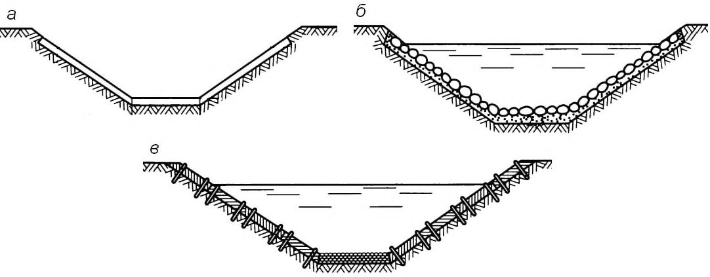
1 - откосные крылья входного оголовка трубы; 2 - то же, выходного; 3 - промежуточные звенья
Рисунок А.1 - Водопропускная труба
А.1.2 водоотводная канава: Сооружение в грунте, представляющее собой простейшего типа открытый водоотвод определенного поперечного сечения, предназначенный для защиты земляного полотна (чаще насыпей) от размыва или переувлажнения, сбора поверхностных (иногда и грунтовых) вод и отвода их в ближайший водоток.
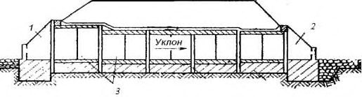
а - укрепление железобетонными плитами; б - укрепление каменным мощением; в - укрепление одерновкой со щебневанием дна
Рисунок А.2 - Поперечные профили водоотводных канав с укреплением
А.1.3 фильтрующие прорези (фильтрующие насыпи): Насыпи, обладающие фильтрующей прорезью, отсыпанные частично из фильтрующих грунтов в зоне длительного подтопления для предохранения верхней части земляного полотна от переувлажнения.
Служат для пропуска небольших расходов воды в основании земляного полотна, устраиваются на логах или пониженных местах.
Различают простые фильтрующие насыпи, в которых водный поток фильтрует через пористую каменную призму, и комбинированные, в которых водный поток может фильтровать через пористую каменную призму и одновременно стекать через заложенную в ней трубу небольшого отверстия.
1 - земляное полотно; 2 - изоляционный слой; 3 - фильтрующая часть насыпи; 4 - укрепление основания; Н - допускаемая глубина потока перед насыпью
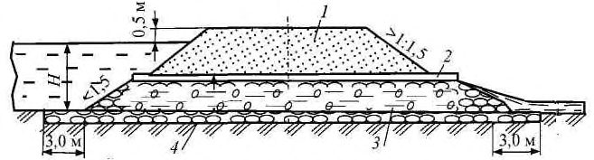
Рисунок А.3 - Напорные фильтрующие насыпи
А.1.4 нагорные канавы: Канавы, устраиваемые с нагорной стороны выемки, служащие для перехвата и отвода поверхностных вод, притекающих к полотну дороги, и отводящие их к ближайшему водопропускному сооружению или в пониженные места рельефа.
Выходы нагорных канав к искусственным сооружениям должны быть отведены от дороги возможно дальше, укреплены и расширены для предупреждения их размыва.
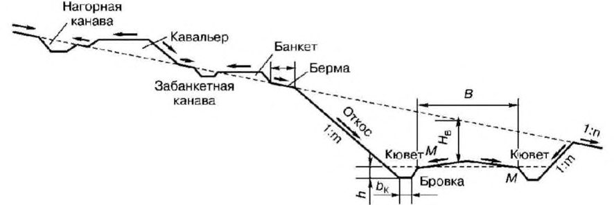
Рисунок А.4 - Схема водоотвода с использованием нагорной канавы
А.1.5 водоотжимная берма: Уступ земляного полотна, отодвигающий поток от земляного полотна либо отделяющий его от водоотводного сооружения.
Служит для отдаления от тела насыпи воды, текущей в водоотводной канаве или в путевом резерве, либо для отдаления от тела кавальера воды в нагорной канаве.
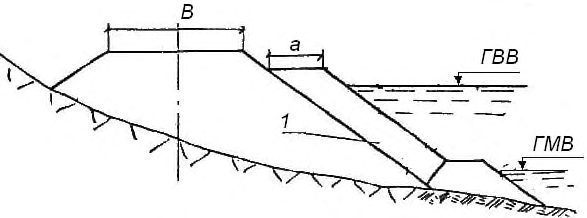
1 - несортированная горная масса, содержащая камень; ГВВ - горизонт высоких вод; ГМВ - горизонт меженных вод; a - ширина бермы; B - ширина основной площади насыпи
Рисунок А.5 - Конструкция укрепления подтопленного откоса насыпи несортированной горной массой в виде защитной призмы
А.1.6 кювет (боковая канава): Небольшая канава, выемка трапецеидальной (редко треугольной) формы вдоль обочины автомобильной или железной дороги.
Кювет может быть неукрепленным (грунтовым) и укрепленным, вымощенным камнем или полностью покрытым бетоном.
Кюветы устраивают в выемках и у насыпей с небольшими рабочими отметками: 1,5-2 м.
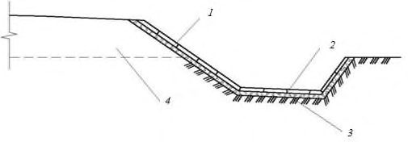
1 - бетонные плиты; 2 - щебень; 3 - дно кювета; 4 - насыпь
Рисунок А.6 - Кювет, укрепленный бетонными плитами
А.1.7 лоток: Придорожная канава небольшой глубины овального или поперечного профиля с пологими мощеными откосами.
Устраивается на пересечении периодически действующих водотоков с глубиной воды не более 0,2 м или для пропуска воды поверх проезжей части -перепускной лоток. Прикромочные лотки устраивают способом непрерывного формования из асфальтобетона или бетона или сборных бетонных элементов.
Рисунок А.7 - Водоотводный лоток эллипсовидного сечения
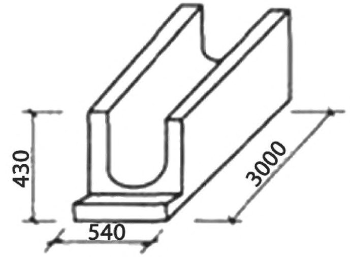
- А.1.8 водоразделительная дамба: Регуляционное сооружение, применяемое на мостовых переходах.
Регулирует пойменные потоки, разграничивает расход между сооружениями, расположенными в общей пойме.
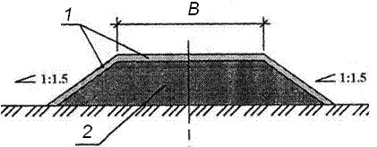
1 - крепление откосов и гребня дамбы посевом трав по слою растительного грунта; 2 - отсыпка тела дамбы местным грунтом
Рисунок А.8 - Поперечный профиль дамбы
- А.1.9 защитная дамба: Гидротехническое сооружение для защиты территории и расположенных на ней сооружений от затопления при высоких уровнях вод в водотоке.
Может перегораживать все русло и пойму (плотины водохранилищ), пойму (подходы к мостовым переходам), рукава рек, часть русла (полузапруды), быть вытянутой вдоль русла (продольная дамба).
- А.1.10 водоотводные валики: Валики, устраиваемые с нагорной стороны от земляного полотна. Валики выполняют из недренирующего грунта с укреплением откосов.
Водоотводные валики применяют в условиях вечной мерзлоты при близком расположении сильнольдистых грунтов для минимизации нарушения их температурного режима.
1 - дренирующий грунт; 2 - укрепление; 3 - водонепроницаемое ядро
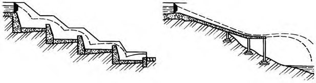
Рисунок А.9 - Водоотводный валик
А.1.11 перепад: Ступенчатое сопрягающее сооружение для перевода потока воды с высоких отметок местности на более низкие в целях гашения кинетической энергии потока, возводимое на участках со значительной разностью отметок местности.
Перепады выделяют одно- и многоступенчатые, а по форме поперечного сечения - прямоугольные и трапецеидальные.
Перепад состоит из входной части, ступеней перепада гасителя и выходного участка. а - ступенчатый перепад; б - консольный перепад
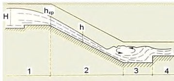
Рисунок А.10 - Перепады
А.1.12 быстроток: Искусственное сооружение (русло) с уклоном дна больше критического.
Примечания
1 Критический уклон - уклон, при котором заданный расход проходит по каналу в условиях равномерного движения с глубиной, равной критической.
2 Критическая глубина - глубина потока, при которой удельная энергия сечения для заданного расхода достигает минимального значения.
H h
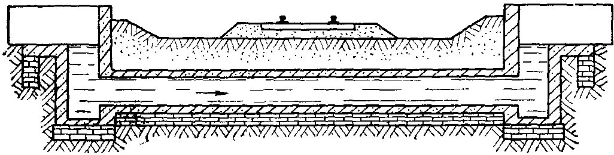
1 - входная часть; 2 - водоскат (лоток); 3 - водобойная часть; 4 - выходная часть; Н - напор воды над порогом водослива; h - глубина потока; h кр - критическая глубина
Рисунок А.11 - Быстроток
А.1.13 дюкер: Напорный участок трубопровода, прокладываемый под руслом реки (канала), по склонам или дну глубокой долины (оврага), под дорогой, расположенной в выемке, работающий в напорном режиме.
При проектировании и строительстве магистральных нефтепроводов дюкером называют участок нефтепровода, прокладываемый на пересечении с искусственным или естественным препятствием: под руслом реки или канала, по дну глубокого оврага, под автомобильной или железной дорогой.
Рисунок А.12 - Дюкер
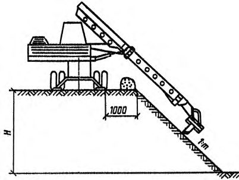
А.1.14 планировка поверхности: Придание поверхностям поперечных и продольных уклонов, величины которых должны обеспечить естественный сток поверхностных вод за пределы земляного полотна без его paзмыва.
Планировка откосов включает операции срезки основной массы грунта с погрузкой его в транспортные средства ковшом и операции зачистки откосов скребком. При холостом ходе скребок заглаживает неровности.
Рисунок А.13 - Планировка поверхности откоса ковшом
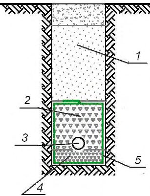
А.1.15 дренаж: Геотехническая конструкция, предназначенная для перехвата и отвода подземных и поверхностных вод. Дренаж может быть поверхностным (открытым) и подземным (закрытым).
На автомобильных дорогах существуют следующие виды закрытых дренажей:
- дренажный слой в толще земляного полотна;
- дренажные трубы.
К системе дренажа железной дороги относятся:
- вертикальная планировка поверхности земляного полотна и балластной призмы на станциях;
- кюветы и канавы;
- железобетонные лотки;
- сеть водостоков с дождеприемными колодцами, пескоуловителями и другими устройствами очистки;
- искусственные сооружения - трубы, мосты, быстротоки и т. д.
1 - песок; 2 - крупный щебень; 3 - труба; 4 - мелкий щебень; 5 - нетканый геотекстиль
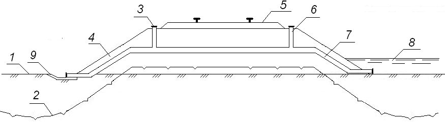
Рисунок А.14 - Закрытый дренаж
А.1.16 сифон: Водопропускное сооружение закрытого типа, предназначенное для перепуска воды через насыпь.
Допускается использовать в зоне вечной мерзлоты, где верхний горизонт мерзлых грунтов является водоупором, в результате чего в равнинной местности вода скапливается около насыпи и оказывает негативное влияние на мерзлоту, растепляя ее.
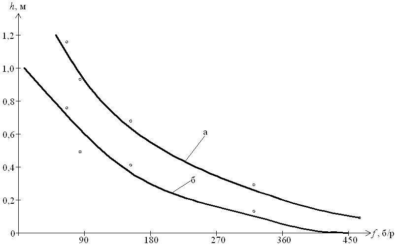
1 - поверхность тундры; 2 - поверхность мерзлого грунта; 3 - заглушка трубы; 4 - тело насыпи; 5 -балластная призма; 6 - вертикальный отводок трубы; 7 - водоотводная труба; 8 - вода; 9 - укрепление зоны выпуска воды
Рисунок А.15 - Схема сифона
А.2Классификация водоотводных сооружений и водопропускных труб
А.2.1 Классификация водоотводных сооружений (таблица А.1)
Таблица А.1
| Классификационный признак | Вид водоотводного сооружения |
|---|---|
| Тип перехвата водного потока | С естественной поверхности |
| Тип перехвата водного потока | С искусственной поверхности |
| Тип перехвата водного потока | Грунтовых (подземных) вод |
| Материал укрепления водоотвода | Засев трав |
| Материал укрепления водоотвода | Каменные материалы |
| Материал укрепления водоотвода | Габионные конструкции |
| Материал укрепления водоотвода | Бетонные и железобетонные конструкции и элементы |
| Материал укрепления водоотвода | Полимерные материалы |
| Применение теплоизоляционных материалов | С устройством теплоизоляционных материалов |
| Применение теплоизоляционных материалов | Без применения теплоизоляционных материалов |
| Тип перехвата поверхностных вод | Продольные водоотводные и нагорные канавы |
| Тип перехвата поверхностных вод | Кюветы |
| Тип перехвата поверхностных вод | Лотки (продольные, поперечные) |
| Тип перехвата поверхностных вод | Перепады |
| Тип перехвата поверхностных вод | Быстротоки |
| Тип перехвата поверхностных вод | Валики |
| Тип перехвата поверхностных вод | Водоразделительные и водозащитные дамбы |
| Тип перехвата поверхностных вод | Планировка поверхности |
| Тип перехвата грунтовых вод | Дренажи мелкого заложения |
| Тип перехвата грунтовых вод | Дренажи глубокого заложения |
| Тип перехвата грунтовых вод | Вертикальный дренаж |
| Тип перехвата грунтовых вод | Горизонтальный дренаж |
| Тип перехвата грунтовых вод | Комбинированный дренаж |
| Тип перехвата грунтовых вод | Одиночный дренаж |
| Тип перехвата грунтовых вод | Групповые дренажи |
А.2.2 Классификация водопропускных труб (таблица А.2)
Таблица А.2
| Классификационный признак | Вид водоотводного сооружения |
|---|---|
| Материал | Бетонные |
| Материал | Железобетонные |
| Материал | Каменные |
| Материал | Металлические (с гладкой и гофрированной поверхностью) |
| Форма поперечного сечения | Круглые |
| Форма поперечного сечения | Прямоугольные |
| Форма поперечного сечения | Овоидальные |
| Форма поперечного сечения | Арочные |
| Взаимное сочетание типов сооружения | Одно- и многоочковые |
| Взаимное сочетание типов сооружения | Одно- и многоярусные |
| Взаимное сочетание типов сооружения | Комбинированные сооружения: водопропускная труба с фильтрующей насыпью и водопропускная труба с переливной насыпью |
| Режим протекания воды в сооружении | Безнапорные |
| Режим протекания воды в сооружении | Полунапорные |
| Режим протекания воды в сооружении | Напорные |
| Гидравлическая работа сооружения | Короткие |
| Гидравлическая работа сооружения | Длинные |
| Тип затопления со стороны нижнего бьефа сооружения | Незатопленное |
| Тип затопления со стороны нижнего бьефа сооружения | Затопленное |
| Применение теплоизоляционных материалов | С устройством теплоизоляционных материалов |
| Применение теплоизоляционных материалов | Без применения теплоизоляционных материалов |
| Тип фундамента | Бесфундаментные (без замены грунтов основания, заменой грунтов основания) |
| Тип фундамента | Фундаментные (плитный - без или с заменой грунтов основания; свайный) |
| Тип сопряжения потока в сооружении | Равнинные (спокойный поток) |
| Тип сопряжения потока в сооружении | Косогорные (бурный поток) |
| Тип оголовков сооружения | Портальный |
| Тип оголовков сооружения | С вертикальными стенками и коридорным оголовком |
| Тип оголовков сооружения | С раструбным оголовком с обратными стенками |
| Тип оголовков сооружения | С коническим звеном и раструбным оголовком |
| Тип оголовков сооружения | Безоголовочная |
| Тип укрепления выходного русла | Без укрепления |
| Тип укрепления выходного русла | Укрепление каменным материалом, в том числе габионными конструкциями, и выходные русла, расположенные на подсыпке |
| Тип укрепления выходного русла | Укрепление бетонными и железобетонными элементами |
| Тип укрепления выходного русла | Применение укреплений из геосинтетических материалов |
| Тип выходного русла | Размываемые |
| Неразмываемые |
|---|
| Деформируемые |
| Недеформируемые |
| Русла-самоотмостки |
БПриложение Б. Методы стабилизации мерзлотно-грунтовых условий
Б.1Влияние обводнения территории на температурный режим грунтов оснований
- Б.1.1 Обводнение территории с точки зрения его влияния на температурный режим грунтов оснований может быть сезонным, имеющим место только в теплый период, и круглогодичным, которое формируется весь год. Сезонное обводнение на температурный режим влияет незначительно. Круглогодичное обводнение влияет существенно. Обводнение может привести к растеплению мерзлоты или к ее полной деградации.
- Б.1.2 Влияние круглогодичного обводнения можно оценивать по графикам рисунка Б.1 в зависимости от суммы градусо-дней с положительной (приведенной с учетом солнечной радиации и испарения с поверхности) температурой воздуха к среднегодовой температуре воздуха и глубине подтопления f . При этом глубину подтопления принимают на 1 октября (т. е. на момент окончания теплого периода года).
Климатический параметр f : абсолютная величина отношения суммы градусодней с положительной (приведенной с учетом солнечной радиации и испарения с поверхности) температурой воздуха к среднегодовой температуре воздуха данного региона
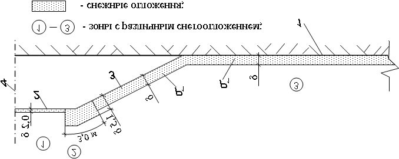
Рисунок Б.1 - Критические значения величины подтопления h , приводящие к деградации мерзлоты в основании земляного полотна ( а ) и приводящие к повышению на 50 % температуры грунта на глубине нулевых амплитуд ( б )
Б.2Учет снегопереноса в теплофизических расчетах
- Б.2.1 При прогнозировании температурного режима многолетнемерзлых грунтовых массивов следует учитывать влияние снегоотложений, как одного из основных факторов, определяющих условия теплообмена на поверхности.
- Б.2.2 Характер снегоотложений при отсутствии и наличии снегопереноса приведен на рисунках Б.2 и Б.3 соответственно, а расчетные характеристики приведены в таблицах Б.1 и Б.2.
На рисунках Б.2 и Б.3 величина δ соответствует толщине снежных отложений в ненарушенной зоне.
1 - естественная поверхность грунта; 2 - основная площадка насыпи; 3 - откос насыпи; 4 - ось симметрии насыпи
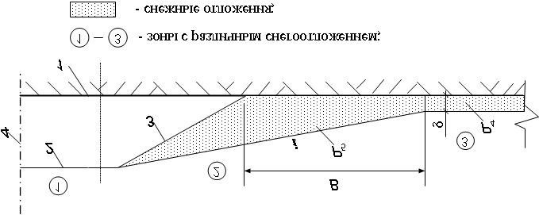
Рисунок Б.2 - Схема снежных отложений при отсутствии снегопереноса
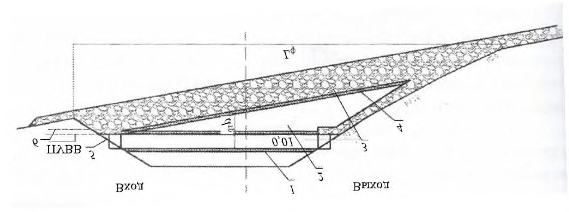
Рисунок Б.3 - Схема снежных отложений при наличии снегопереноса
Таблица Б.1 Естественные уклоны i снегоотложений у препятствий в зависимости от величины Q снегопереноса
| Снегоперенос Q , м³ /м | Уклон снегоотложений i |
|---|---|
| 200 | 1:3 |
| 400 | 1:5 |
| 600 | 1:7 |
| 1000-1200 | 1:10 |
Таблица Б.2 Плотность Р снега для различных зон снегозаносов
| Обозначение | Характеристика | Значение, кг/м³ |
|---|---|---|
| Р 1 | Снег в ненарушенной зоне при отсутствии снегопереноса | 100-150 |
| Р 2 | Уплотненный снег после расчистки | 250-350 |
| Р 3 | Уплотненный снег на проезжей части | 650-750 |
| Р 4 | Снег в ненарушенной зоне при снегопереносе | 250-300 |
| Р 5 | Снег в зоне скоплений у препятствий | 280-350 |
ВПриложение В. Выбор конструктивных решений водопропускных сооружений на вечной мерзлоте
В.1Учет влияния водного потока при пересечении насыпи водопропускной трубой
В.1.1 Следует учитывать, что поскольку лоток трубы расположен в уровне естественной поверхности грунта, грунтовые воды, проходящие в пределах деятельного слоя (т. е. в пределах разности отметок 1 и 2 на рисунке В.1), встречая уплотненный или промерзший грунт под телом трубы, поднимаются на поверхность и образуют обводнение 5 (рисунок В.1), которое, прогреваясь летом, способствует дополнительной просадке грунта и увеличению глубины обводнения.
В.1.2 Для предотвращения обводнения под телом трубы устраивают над деятельным слоем крупнопористую скальную наброску 8 . При этом следует предусмотреть переходные зоны между крупнопористой скальной наброской 8 и обычным грунтом на входе и выходе из трубы. Это достигается, например, удлинением крупнопористой скальной наброски 8 в обе стороны по осевой линии трубы. а б
1 - естественная поверхность грунта; 2 - водоупор; 3 - направление водного потока; 4 - массив уплотненного под насыпью грунта; 5 - верхний уровень воды; 6 - тело насыпи; 7 - водопропускная труба; 8 - крупнопористая скальная наброска под телом трубы
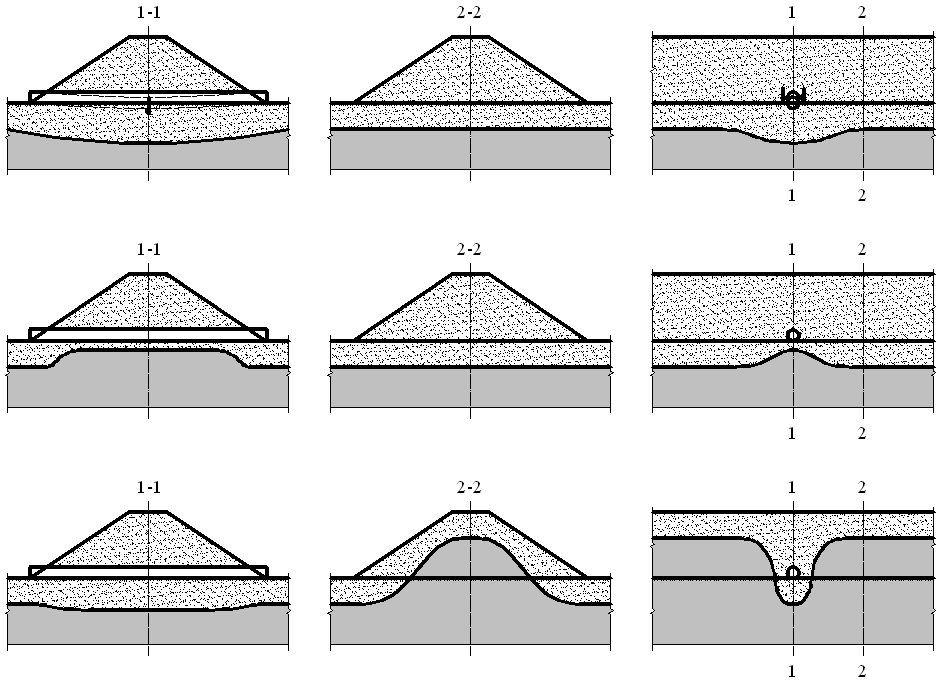
Рисунок В.1 - Характер движения грунтовых вод и распределение температур в грунте в летний период в зоне водопропускной трубы на вечной мерзлоте при наличии массива уплотненного грунта под трубой ( а ) и при наличии под трубой фильтрующей прослойки ( б )
0°
0°
0°
0°
В.2Схемы водопропускной трубы при снегопереносе
- В.2.1 Следует учитывать, что при сильном снегопереносе (150 м³ /м и более) оголовки труб заносятся снегом, и полость трубы становится зоной растепляющего влияния. В этом случае следует учитывать растепляющее влияние снега в прогнозных теплофизических расчетах либо разрабатывать техническое решение, при котором в зоне водопропускной трубы предусматриваются дополнительные меры по охлаждению.
В.2.2 Дополнительные меры по охлаждению рекомендуется предусматривать либо путем устройства охлаждающих установок типа термосифонов, либо созданием конструкции, которая сама обеспечивает охлаждение (рисунок В.2). В такой конструкции применяют уположение откосов насыпи и устраивают продухи и фильтрующие отсыпки из камня, замещающие массивы снега при снегозаносах. а а - разрез А-А; б - план; 1 - конфигурация откоса существующей насыпи; 2 - предлагаемая конфигурация откоса; 3 - существующая труба; 4 , 5 - дополнительные звенья трубы; 6 - фильтрующая каменная наброска; 7 - замкнутый продух; 8 - отверстия для пропуска воды через каменную наброску
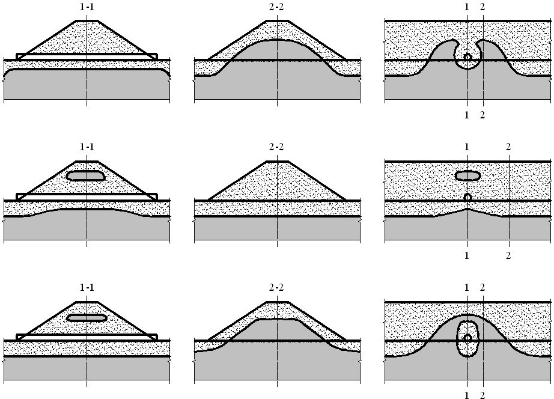
Рисунок В.2 - Водопропускная труба для участков трассы с сильным снегопереносом
В.3Снегозаносимость охлаждающих устройств водопропускных труб
В.3.1 При отсутствии снегопереноса полость водопропускной трубы при теплофизических расчетах следует учитывать как зону охлаждения. При наличии снегопереноса оголовки труб заносятся снегом либо закрываются принудительно на зимний период. В этом случае для обеспечения охлаждения воздуха внутри полости трубы следует устраивать специальные продухи в виде труб, полости которых сообщаются с полостью трубы, а верх возвышается над уровнем снежных заносов.
- В.3.2 Продухи устраивают с возвышением над уровнем снежных заносов, но с замкнутой полостью. Охлаждение происходит за счет конвекции воздуха в замкнутой полости. Незамкнутые полости забиваются снегом и инеем и выходят из работы.
В.4Комбинированные системы
В ряде случаев целесообразно сочетать в единой системе два и более вида водопропускных сооружений. Тогда суммарный эффект оказывается выше суммы отдельных эффектов.
На рисунке В.3 приведен пример системы, которую следует использовать в горных условиях.
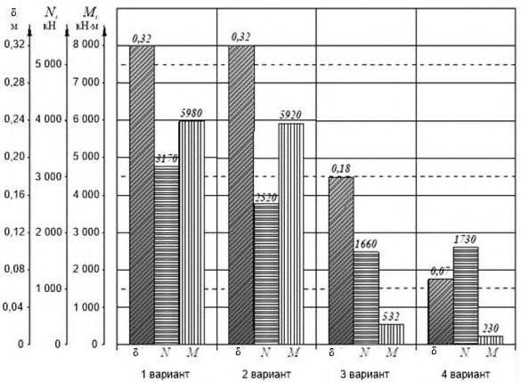
Рисунок В.3 - Комбинированное (металлическая труба и фильтрующая насыпь) наледезащитное водопропускное сооружение
В.5Водопропускные трубы в высоких насыпях
- В.5.1 При проектировании высоких насыпей рекомендуется учитывать особенности теплового состояния и НДС водопропускной трубы и прилегающих участков насыпи:
- а) при высоте насыпи до 3 м в конце теплого периода насыпь с трубой находится в талом состоянии, а в конце холодного - в мерзлом; по мере увеличения высоты насыпи ухудшается температурное состояние грунтов за счет подсекающего теплового эффекта с боковых сторон насыпи (температура грунтов оснований повышается, а зона растепленных грунтов увеличивается). В результате водопропускная труба оказывается в толще сильнодеформируемых грунтов (рисунок В.4, а ), что приводит к повышению напряжений и деформациям трубы; б) при высоте насыпи 6-10 м под трубой (рисунок В.4, б и в ) в течение первых лет эксплуатации может образоваться мерзлая зона, перераспределяющая нагрузку с основной площадки на основание трубы. Мерзлые стенки траншеи из талого грунта (рисунок В.4, в ) ограничивают деформации талой зоны вокруг трубы как в вертикальном направлении, так и в направлении продольной оси трубы; в) при высоте насыпи более 12 м над трубой и на соседних участках насыпи в процессе первых лет эксплуатации формируются другие зоны твердомерзлого грунта (перелетки) (рисунок В.4, г, д, е ). Перекрытие и стенки из мерзлого грунта в значительной степени воспринимают на себя вертикальную нагрузку в зоне трубы и передают ее на смежные участки насыпи. Соседние участки насыпи здесь могут уменьшить деформации трубы по сравнению с тем случаем, когда вся насыпь содержит только талый грунт. Мерзлая зона, расположенная над трубой и соседними участками насыпи, имеет внешний вид либо балки, либо арки, лежащих на упругом основании (на пластично-мерзлых грунтах). Они перераспределяют давление от веса грунта и временной нагрузки, уменьшая его в зоне трубы и передавая это давление на соседние участки насыпи.
В.5.2 Рекомендуется закладывать в проект принципиальное изменение мерзлотного состояния насыпи с трубой за счет применения теплоизоляции и охлаждающих установок глубинного типа (сезонных охлаждающих установок или термоопор). В этом случае твердомерзлые грунты рядом с трубой насквозь «прошивают» пластично-мерзлую зону. При этом мерзлотная траншея, мерзлотная балка или мерзлотная арка могут быть созданы гораздо раньше, чем они формировались бы естественным путем, и могут быть сформированы там, где их естественное образование было бы невозможно.
В.5.3 В таблице В.1 и на рисунке В.5 приведены численные значения параметров НДС водопропускных труб в высоких насыпях для приближенного учета в проектах. Для более точного определения показателей НДС высоких насыпей с перечисленными выше мерзлотно-грунтовыми образованиями следует использовать численные методы расчетов.
В.5.4 В проект должны быть включены схемы размещения контрольных термокаротажных скважин в насыпи рядом с трубой для наблюдения за работой и состоянием сооружения и его основания как в период строительства, так и в период эксплуатации, а также требования по периодичности их проведения, обработке и систематизации. Эти наблюдения следует проводить в целях сопоставления основных показателей работы сооружения и его основания с проектными и оценки эксплуатационной надежности.
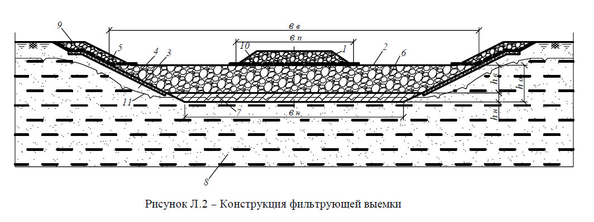
Примечание а -е - см. в В.5.1.
Рисунок В.4 - Различные мерзлотно-грунтовые состояния высоких насыпей в зоне водопропускной трубы, возникающие в процессе эксплуатации
Таблица В.1 -Напряженно-деформированное состояние водопропускной трубы при различных мерзлотных состояниях
| Параметры | Параметры | Параметры | |
|---|---|---|---|
| Характеристика вариантов | Вертикальный прогиб δ в центре трубы, м | Максимальная продольная сила N , кН | Максимальный изгибающий момент М , кН·м |
| 1 Талая насыпь | 0,32 | 3170 | 5980 |
| 2 Мерзлотная траншея | 0,32 | 2520 | 5920 |
| 3 Мерзлотная балка | 0,18 | 1660 | 532 |
| 4 Мерзлотная арка | 0,07 | 1730 | 230 |
Рисунок В.5 - Напряженно-деформированное состояние водопропускной трубы при различных мерзлотных состояниях
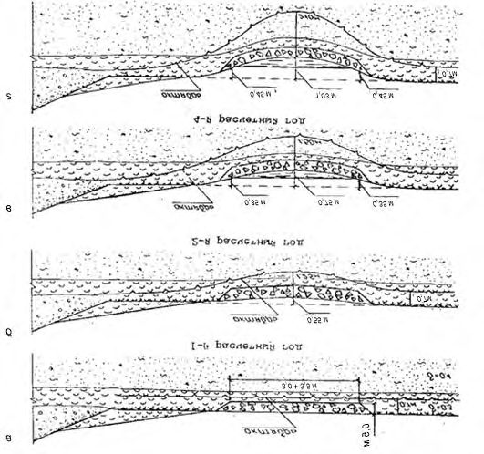
В.6Фильтрующие водопропускные сооружения для специфических условий
При наличии местного камня применяют фильтрующие выемки (рисунок В.6), сущность которых сводится к замене грунта основания на слой каменной наброски (опорный массив 2 на рисунке В.6).
1 - балластная призма шириной b п; 2 - опорный массив высотой h о и шириной поверху и понизу b в и b н соответственно; 3 - откосы выемки; 4 - теплоизоляционный слой; 5 - защитный слой; 6 , 7 - верхний и нижний соответственно ярусы опорного массива 2 высотой h в и h н; 8 - грунт основания; 9 , 10 - прослойки из геотекстиля; 11 - положение ВГВМ на момент окончания теплого периода года
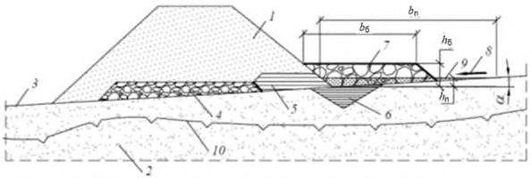
Рисунок В.6 - Конструкция фильтрующей выемки
В.7Водоотводные канавы самоуглубляющегося типа. Искусственнные полосы стока
На слаботочных марях рекомендуется устройство водоотводных канав самоуглубляющегося типа.
На первом этапе отрывают траншею глубиной 0,5-0,7 м, шириной 4,0-4,5 м и засыпают скальным грунтом, позволяющим дренировать транзитной воде в направлении естественного стока (рисунок В.7). В последующем за тричетыре года под засыпкой происходит уплотнение вытаивающих нижележащих слоев, что сопровождается прогибом поверхности насыпного грунта, с образованием русла для стока воды. После завершения формирования водоотвода засыпают местные провалы, а в местах вытаивания больших объемов льда проводят нарезку желоба бульдозером или грейдером на всей длине сооружения. Разновидностью водоотводных канав самоуглубляющегося типа являются искусственные полосы стока, которые рекомендуется применять на слабосточных маревых участках, характеризующихся наличием хотя бы незначительного продольного уклона местности. Суть способа состоит в том, что отсыпка на поверхность мари небольшого по мощности (0,2-0,3 м) слоя дренирующего грунта шириной 3,54,0 м всегда приводит к формированию под такими линейными сооружениями нового деятельного слоя, в два-три раза превышающего мощность слоя сезонного оттаивания грунтов в естественных условиях на мари. Процесс образования нового деятельного слоя под отепляющей отсыпкой сопровождается тепловой осадкой подстилающих грунтов, что в конечном итоге через два-четыре года приводит к образованию на месте отепляющей отсыпки полосы стока водоотводной канавы, которую можно содержать с использованием техники.
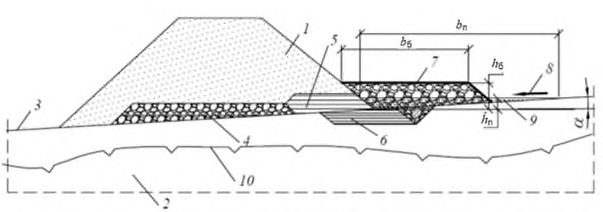
а -г - разные стадии процесса формирования самоуглубляющихся канав
Рисунок В.7 - Водоотводная канава самоуглубляющегося типа, построенная на моховой мари с наличием близко залегающего к дневной поверхности подземного льда в долине реки
В.8Бесканавный способ водоотвода
При наличии поперечного и продольного по отношению к насыпи уклонов местности водоотвод может быть осуществлен без сооружения канавы (рисунок В.8): вода отводится вдоль насыпи непосредственно у подошвы откоса, при этом для предотвращения размывов и протаивания сооружаются берма из каменной наброски и противофильтрационный замок.
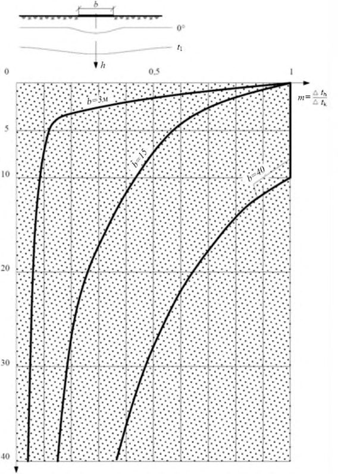
а , б - различные варианты конструктивного исполнения; 1 - тело насыпи; 2 - грунт основания; 3 -естественная поверхность; 4 - технологическая отсыпка из крупнообломочного грунта; 5 - боковой противофильтрационный замок; 6 - нижний противофильтрационный замок; 7 - берма из скального фракционного грунта шириной b б ; 8 - направление потока поверхностных вод; 9 - поперечное сечение продольного водного потока шириной b п; 10 - положение ВГВМ на момент окончания теплого периода года; h б - высота бермы; h п - глубина потока
Рисунок В.8 - Бесканавный способ водоотвода
ГПриложение Г. Особенности температурного режима грунтов тела и оснований сооружений
Г.1Особенности температурного режима в системе «земляное полотно - водоотводная канава - прилегающая территория»
Г.1.1 При проектировании системы водоотвода следует учитывать изменение расстояния между земляным полотном и водоотводной канавой, существенно изменяющее размеры зоны теплового влияния на ММГ оснований. Указанные расстояния устанавливают теплофизическими расчетами. На рисунках Г.1 и Г.2 приведены характерные примеры качественной картины такого влияния.
Г.1.2 На рисунке Г.1 приведена качественная характеристика влияния «тепловой полосы» различной ширины b на температурный режим грунтов оснований.
При неширокой водоотводной канаве ее тепловое влияние практически затухает уже на глубине 5 м. Поскольку под понятием «тепловая полоса» имеется в виду и насыпь, и выемка и др., то на графике рисунка Г.1 для сопоставления показано влияние насыпи шириной по подошве основания 15 м. Крутизна кривой существенно уменьшается, а тепловое влияние увеличивается по глубине. При увеличении ширины полосы до 40 м график качественно изменяет свой вид: по оси полосы до глубины 10 м будет иметь место одномерный тепловой процесс, определяемый лишь тепловыми параметрами самой насыпи. С глубины более 10 м сказывается влияние соседних с насыпью зон на окружающей территории.
Г.1.3 Качественная картина изменения температурных полей применительно к водоотводной канаве, удаляемой от насыпи, в пределах реального диапазона расстояний приведена на рисунке Г.2. Расчеты приведены для насыпи с шириной подошвы 15 м и водоотводной канавы общей шириной 5 м.
На рисунке Г.2 приведены результаты расчета четырех вариантов.
На рисунке Г.2, а , показан расчет только для насыпи шириной по подошве 15 м. На рисунке Г.2, б -г , показаны расчеты для насыпи той же ширины и водоотводной канавы шириной поверху 5 м, удаленной от насыпи на расстояние от 0 до 40 м.
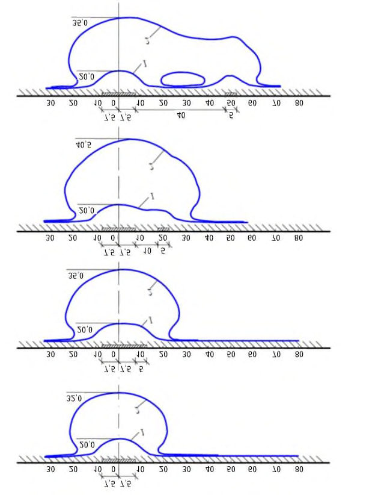
а - схема «тепловые полосы»; б - график теплового влияния для различных b
Рисунок Г.1 - Тепловое влияние на различной глубине h «тепловой полосы» шириной b с резко отличающимися тепловыми граничными условиями по сравнению с окружающей территорией
Рисунок Г.2 - Положение нулевой изотермы после возведения насыпи и водоотводной канавы на момент окончания теплого периода года при различном взаимном положении насыпи и канавы через 5 ( 1 ) и 50 ( 2 ) лет
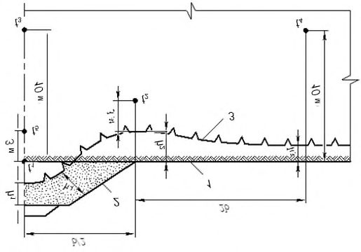
ДПриложение Д. Теплофизический мониторинг водопропускных труб
Д.1 Основной составляющей теплофизического мониторинга водопропускных труб является теплофизический мониторинг насыпей в зоне водопропускных труб. В ряде случаев рекомендуется проводить наблюдения за температурой внутри полости трубы, внутри полости продухов и т. п.
Д.2 В зоне водопропускных труб следует учитывать трехмерный характер тепловых процессов. Если непосредственно в вертикальной плоскости, проходящей по оси трубы, суммируются летние протаивания от поверхности основной площадки насыпи и от тела трубы, то в прилегающих участках насыпи картина протаивания может быть более благоприятной, что, в свою очередь, может быть учтено при расчете несущей способности трубы.
Измерения температуры рекомендуется проводить по схеме рисунка Д.1. Створы следует располагать не далее 3 м от боковой поверхности трубы. При этом для подходных участков насыпи створы следует располагать не далее 20 м от оси трубы. Термоскважины следует располагать по схеме на рисунках Д.2 и Д.3.
Д.3 Нумерацию термоскважин следует регламентировать во избежание путаницы при большом объеме измерений. Последовательность номеров следует принимать слева направо, считая по ходу возрастания километров (см. рисунок Д.3):
- скважина № 1 - расположена в поле слева от насыпи, вне зоны ее теплового влияния;
- скважина № 2 - расположена в зоне подошвы левого откоса насыпи;
- скважина № 3 - расположена в верхней части левого откоса насыпи или в зоне основной площадки насыпи;
- скважина № 4 - расположена в верхней части правого откоса насыпи или в зоне основной площадки насыпи;
- скважина № 5 - расположена в зоне подошвы правого откоса насыпи;
- скважина № 6 - расположена в поле справа от насыпи, вне зоны ее теплового влияния.
Для термоскважин в теле подходной части насыпи впереди по ходу нарастания километров или позади добавляют к обозначению индекс «п» или «з» соответственно (см. рисунок Д.3).
Д.4 Расчетным моментом времени измерений является 1 октября. Поэтому для сопоставления и анализа результатов измерений необходимо вводить поправки к температуре, замеренной на разной глубине в моменты времени, не совпадающие с расчетными. В таблице Д.1 приведены значения поправок.
Таблица Д.1 Поправки для приведения результатов измерений к расчетному моменту измерений
| Моменты | Поправки для глубин измерений, м | Поправки для глубин измерений, м | Поправки для глубин измерений, м | Поправки для глубин измерений, м | Поправки для глубин измерений, м |
|---|---|---|---|---|---|
| времени, не | 5 | 10 | 15 | 20 | 30 |
| совпадающие с расчетным | |||||
| 1 сентября | + 0,5 | + 0,2 | + 0,1 | 0 | 0 |
| 1 ноября | 0 | 0 | 0 | 0 | 0 |
Если время замера не совпадает с расчетным более чем на 2 мес, то пересчет полученных данных на расчетный момент рекомендуется осуществлять численным методом.
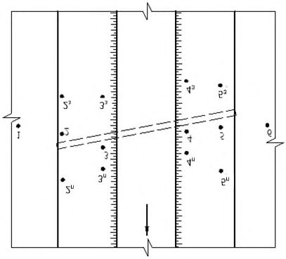
1 - естественная поверхность грунта; 2 - откос насыпи; 3 - положение ВГВМ на момент окончания теплого периода года; b - ширина насыпи; h 1 - глубина оттаивания мерзлого грунта под основной площадкой; h 2 -глубина протаивания под подошвой откоса; h 3 - естественное положение верхней зоны мерзлоты за пределами зоны влияния насыпи; h 4 - толщина оттаивания слоя грунта на откосе; t 1t 5 - контрольные точки для оценки состояния температурного режима в грунтовом массиве
Рисунок Д.1 - Основные параметры, характеризующие температурный режим насыпи (схема 1)
Рисунок Д.2 - Нумерация термоскважин в насыпи
Примечание - Обозначения, примененные в настоящем рисунке, см. в Д.3.
Рисунок Д.3 - Нумерация термоскважин в зоне водопропускной трубы
ЕПриложение Е. Противоналедно-водопропускные сооружения
Е.1Общие положения
По причине возникновения наледи разделяются на два вида: а) природные наледи, ежегодно или реже возникающие в естественных условиях; б) вынужденные (прогнозируемые) наледи, возникающие вследствие нарушения мерзлотно-грунтовых условий в результате постройки сооружений.
К мероприятиям и устройствам, устраняющим или сокращающим причины возникновения вынужденных наледей и активизацию наледного процесса в местах действия природных наледей, относятся: дренаж, каптаж, осушение местности глубокими открытыми канавами и полуоткрытыми лотками, регуляция русел; сосредоточение потока, например посредством наледных поясов, полузапруд или применением лотков, на подходе и в пределах водопропускных сооружений; электротермические способы подогрева воды и грунтов. При наличии благоприятного сочетания рельефа, геологической, гидрогеологической обстановки и мерзлотно-грунтовых условий следует применять мерзлотные и тепловые пояса.
Е.2Особенности выполнения изысканий на наледеопасных участках
При изысканиях наледи необходимо рассматривать, как опасное физикогеологическое явление, подобно карсту и оползням, и укладывать трассу с расчетом на исключение или на снижение отрицательного воздействия наледей на проектируемые сооружения. Наиболее благоприятными по физико-геологическим условиям для размещения трассы являются водораздельные участки, склоны антиклинальных долин, борта моноклинальных долин с падением слоев пород вглубь склона, верхние части склонов, сложенных породами с горизонтальным налеганием слоев, южные склоны и поверхность речных террас, сложенных дренирующими грунтами. Менее благоприятными являются речные долины с синклинальным залеганием пород и субсеквентные долины, в зонах тектонических разломов, являющихся путями выхода на поверхность подземных вод, способствующих образованию больших и гигантских наледей.
Е.3Прогнозирование появления наледей в результате железнодорожного строительства
В результате строительства сооружений наледи появляются на участках с наличием водоносного слоя и, как правило, у низких насыпей, при вскрытии водоносных слоев выемками, у мостов и труб с массивными фундаментами, а также во всех случаях, когда при возведении сооружений в их зоне произошло глубокое изменение природных мерзлотно-грунтовых условий.
У земляного полотна наледи появляются при выполнении условий:
где h ест - глубина промерзания грунта в естественных условиях выше местоположения полотна; h в - расстояние от дневной поверхности до зеркала грунтовых вод на начало промерзания; h пр - глубина промерзания деятельного слоя под земляным полотном.
Величины h ест и h в устанавливают по данным изысканий. Величина h пр зависит от размеров земляного полотна, физических свойств слагающих его грунтов, климатических условий в районе строительства и определяется по отдельной методике. Таким образом, целенаправленно регулируя размеры земляного полотна и в первую очередь его высоты, можно в каждом конкретном случае уменьшить риск появления наледи.
Появления наледей у водопропускных труб и других подобных сооружений следует ожидать в тех случаях, когда
где h ф - мощность фундамента трубы; h тр - глубина промерзания грунта под фундаментом трубы.
Для прогнозирования величины h тр и обоснования предложений по конструированию фундаментов труб на наледных участках следует проводить теплофизические расчеты по определению температур в области передвижения границы раздела фаз при радиальном потоке тепла в трубе и теплопритоке снизу.
Е.4Противоналедные мероприятия и устройства
Е.4.1 Противоналедные мероприятия и устройства рекомендуется применять во всех случаях, где это возможно по инженерно-геологическим условиям, ледотермическому режиму водотоков и экономически целесообразно.
Противоналедные мероприятия и устройства необходимо принимать с учетом генетического типа наледи, дебита и температуры воды источника, питающего наледь, рельефа и инженерно-геологических условий в пределах наледного участка, а также в увязке с комплексом проектных решений по конструкциям земляного полотна и водопропускных сооружений.
При выборе противоналедных мероприятий и устройств предпочтение следует отдавать тем из них, которые исключают активизацию природных и возникновение техногенных наледей при постройке дорожных сооружений.
В случаях невозможности или нецелесообразности использования таких мероприятий и устройств необходимо предусматривать применение средств, обеспечивающих защиту дорожных сооружений от непосредственного воздействия наледей.
Е.4.2 Противоналедные мероприятия и устройства разделяют на постоянные и временные.
Постоянные противоналедные устройства необходимо применять на участках действия природных наледей и в местах, где вероятно возникновение техногенных наледей, которые могут вызвать нарушение нормальной работы рассматриваемого объекта или создать опасность для движения транспорта и устойчивости сооружения.
Временные мероприятия и устройства требуется применять для непосредственного ограждения рельсовой колеи от наледей, возникающих в результате изменения естественных условий в период строительства, при внезапных появлениях наледей, угрожающих безопасности движения транспорта и исправности сооружений, а также в случаях, когда для проектирования и строительства постоянных противоналедных мероприятий необходимо продолжительное время.
Для задержания наледей в местах, удаленных от полотна, рекомендуется применять мероприятия, активизирующие наледный процесс:
- наледные пояса и активные противоналедные валы для наледей поверхностных водотоков;
- мерзлотные пояса для наледей грунтовых вод.
Е.4.3 Наледные пояса целесообразно применять для задержания наледей, возникающих на небольших и периодически действующих водотоках. Они представляют собой участки расширяемого русла, покрываемые каменной отмосткой или бетонными плитами. Размеры поясов следует назначать на основе результатов теплотехнических расчетов.
При расчетах глубину потока в пределах пояса рекомендуется принимать равной от 2 до 5 см, а ширину пояса - не менее 1,0 м. В случаях значительного естественного уклона русла наледные пояса целесообразно выполнять с перепадами высотой до 0,5 м. Для повышения интенсивности охлаждения потока рекомендуется применять наледные пояса с повышенной шероховатостью.
Количество и расположение наледных поясов устанавливают с расчетом удержания полного объема наледи на необходимом расстоянии от выполненных объектов -земляного полотна или водопропускного сооружения.
Е.4.4 Активные противоналедные валы рекомендуется применять для задержания наледей на малых и средних водотоках.
Вал выполняется из грунта со щитом из досок или железобетонных плит, а также с плоским утепленным лотком, вымощенным камнем или бетонными плитами, размещаемым по руслу выше вала.
Действие активного противоналедного вала основано на том, что плоский лоток в качестве наледного пояса вызывает растекание потока волн тонким слоем, способствует его интенсивному охлаждению, зарождению и развитию наледи перед валом раньше, чем она может возникнуть у водопропускного сооружения, расположенного по руслу ниже вала. Возникновение наледи в пределах плоского лотка будет способствовать заполнению водопропускной канавы и щели под щитом. После этого наледь, задерживаемая щитом и валом, станет развиваться вверх по руслу.
Размеры водопропускной канавы и щели под щитом следует определять с учетом пропуска весенних вод без разбора щита. Разбор щита необходимо предусматривать только в случаях, когда по прогнозу ожидается особо высокий паводок.
Е.4.5 Мерзлотные пояса целесообразно применять для задержания в удалении от земляного полотна наледей, возникающих в определенных местах за счет выхода грунтовых вод с небольшим дебитом.
Мерзлотные пояса представляют собой полосы расчистки с валами из снега или грунта и водоотводными канавами. Из пределов полос расчистки необходимо удалять растительно-моховой покров и снег.
Вид мерзлотных поясов и их количество, размеры полос расчистки, валов и канав следует назначать из условий задержания всего объема наледи. Причем глубину канав требуется принимать не менее 0,6 м, а ширину вала по верху - от 1,0 до 3,0 м, в зависимости от способов производства работ.
Мерзлотные пояса следует размещать на расстоянии 50-100 м от ограждаемого участка земляного полотна и друг от друга с расположением в плане. Концы канав необходимо врезать в борта лога, дну канав - придавать продольный уклон не менее 0,002.
Тип укрепления откосов с нагорной стороны грунтовых валов, полосы вдоль его подошвы и водоотводных канав следует принимать в зависимости от скорости течения паводковых вод.
Мерзлотные пояса для задержания речных наледей следует применять на небольших водотоках при неглубоком залегании водоупора под руслом. Они представляют собой канавы шириной 2-4 м, вырубаемые во льду. Канавы располагают поперек долин водотоков на расстоянии 200-300 м от водопропускного сооружения на отмелях и перекатах, где водоток может быть проморожен быстрее. Канаву следует заглублять на 0,3-0,5 м ниже дна русла, а ее концы - врезать в берега на такое расстояние, чтобы предотвратить возможность прохода в береговых наносах вод, питающих наледь. Лед и грунт из канав необходимо укладывать в вал, располагаемый с низовой стороны канавы.
Е.4.6 Водонепроницаемые экраны с валами из грунта следует применять в целях отдаления от ограждаемого сооружения места выхода грунтовых вод, образующих наледь. Экраны представляют собой траншеи, заполненные водонепроницаемым грунтом, расположенные поперек движения потока грунтовых вод, питающих наледь. Низ экрана должен быть заглублен в водоупорные породы не менее чем на 0,25 м. Перекрытие экраном потока грунтовых вод должно быть полным, поэтому устройство экранов наиболее рационально в узких логах с неглубоким залеганием водоупорных пород. Высота вала определяется объемом задерживаемой наледи. Ширина вала по верху назначается не менее 3,0 м. Откос вала на 0,20 м выше расчетного горизонта воды от таяния наледи должен быть укреплен, исходя из условия недопущения размыва вала поверхностными и наледными водами в весенний период.
В районах со снежными заносами во избежание свободного прохода подземных вод под снегом экран следует размещать за пределами снежного отложения, возникающего у вала.
Е.4.7 Постоянные противоналедные заборы применяют для задержания вдали от дороги наледей различных типов, образующихся в одном и том же месте. Высоту забора следует назначать в зависимости от объема льда, но не более 4,0 м. При необходимости устраивают несколько заборов.
Е.4.8 Сборно-разборные заборы из досок или бревен или переносимые щиты из досок целесообразно применять для защиты от наледей грунтовых или поверхностных вод, имеющих непостоянный характер или меняющих положение в разные годы. Стенки заборов и щитов следует устраивать сплошными, без просветов. Заборы применяют в качестве временного дополнительного средства в комплексе противоналедных сооружений и устройств на участках со сложными инженерно-геологическими условиями при больших размерах наледей. Количество заборов, их высоту и длину определяют в зависимости от размеров задерживаемой наледи и рельефа местности.
Е.4.9 Для отвода из выемок грунтовых вод с ограниченным периодом действия следует применять лотки закрытого типа взамен кюветов. Дно лотков следует размещать ниже глубины сезонного промерзания, а в обоснованных случаях - на глубине не менее 80 % мощности деятельного слоя.
Осушение местности открытыми канавами целесообразно предусматривать на участках с неглубоким залеганием грунтовой воды и поверхности вечномерзлых грунтов, в том числе в случаях, когда верхний защитный слой представлен глинистыми грунтами с включением дресвы, а поток грунтовой воды имеет малый дебит и перемерзает зимой.
Размеры канав и способ укрепления откосов назначают в зависимости от притока и глубины залегания грунтовых вод, площади осушаемой территории, скорости течения воды в канаве в летнее время и других инженерногеологических условий в пределах наледного участка.
При наличии грунтовых вод, не перемерзающих зимой, целесообразно применять канавы в сочетании с неглубоким лотком, например из половины асбоцементной трубы, втопленной на глубину ниже дна канавы.
Для осушения местности, перехвата и отвода грунтовых и надмерзлотных вод на значительное расстояние следует применять полуоткрытые водоотводные лотки. Конструкция лотков данного типа обеспечивает минимальную потерю тепла водотоком и улучшает водно-тепловой режим грунтов. Весной лотки требуется очищать от снега и открывать. Осенью лотки необходимо закрывать на всю ширину досками.
Е.4.10 При разработке конструкций дренажей и каптажных устройств необходимо предусматривать мероприятия, направленные на предотвращение замерзания воды в смотровых колодцах, отводных трубах и на выходе из них. С этой целью отводные трубы закладывают на глубине не выше нижней трети глубины сезонного промерзания, а низ трубы на выходе размещают выше поверхности земли на 1,0 м и более. На пологих склонах местности следует применять отепленные оголовки отводных труб.
Дренаж и каптаж целесообразно применять на участках с наличием и возможным развитием наледей подземных вод и четко выраженными водоносными слоями грунтовых вод. Расположение дренажей и глубину их заложения следует назначать в зависимости от требуемой глубины осушения, мощности водоносного слоя и положения водоупора. Расчет дренажей и назначение их конструкции выполняют с использованием обычных методов, на основе данных специальных инженерно-геологических изысканий.
Каптаж целесообразно применять на наледных участках при наличии источников подземных вод, выходящих на склоне выше дороги. Каптаж может состоять из одного или нескольких колодцев, а также из коротких галерей, канав или лотков, собирающих воду, и отводных устройств.
Е.5Специальные противоналедно-водопропускные сооружения
Специальными противоналедно-водопропускными сооружениями являются:
- свайно-тоннельные водопропускные сооружения;
- противоналедные мосты-трубы;
- двух- и трехъярусные трубы со сквозными отверстиями между ярусами (для насыпей высотой более 6 м);
- комбинированные фильтрующие насыпи с любым количеством водопропускных труб.
Е.6Исходные данные для выбора и проектирования противоналедных мероприятий и устройств
Исходными данными для выбора и проектирования противоналедных мероприятий и устройств на стадии задания на проектирование являются: а) по поверхностным водотокам - расход и температура воды в осеннезимний период; скорость потока, ширина, глубина и уклон русла; предполагаемые изменения теплового и ледового режимов водотока при строительстве и степень влияния этих изменений на наледный процесс; б) по подземным водам, вскрываемым выемками, канавами и карьерами, - ожидаемый приток и температура воды, мощность и протяженность вдоль пути водоносного слоя, возможные изменения режима вод в связи со строительством; в) по всем природным наледям - генетический тип наледи, время ее формирования (начало и конец), линейные размеры, площадь и объем наледи, возможные изменения в режиме наледи в связи со строительством, степень опасности наледи для проектируемых сооружений.
Перечисленные данные включают в пояснительную записку, в которой, кроме того, приводят описание общих физико-геологических условий района, необходимое для прогнозирования наледей и выбора основных проектных решений; прилагают каталог и график наледных участков в районе трассы, а также паспорта больших природных наледей, в том числе планы масштаба 1:2000-1:5000.
Рабочие чертежи противоналедных мероприятий и устройств разрабатывают на основе уточненных данных по всем наледным участкам, в том числе:
- описания рельефа, геологической, гидрогеологической обстановки и мерзлотно-грунтовых условий;
- расхода и температуры воды наледных водотоков в осенне-зимний период, их теплового и ледового режимов, скорости потока;
- ширины, глубины и уклона русел;
- климатических показателей, необходимых для теплотехнических расчетов;
- показателей природных наледей, их генетического типа, линейных размеров, площади и объема наледного льда, периода формирования наледей;
- прогнозирования степени опасности наледи;
- рекомендуемых проектных решений, с использованием графических материалов - паспорта наледи, плана наледного участка (масштаба 1:5001:2000), геологических разрезов.
Е.7Проектирование насыпей на участках природных и прогнозируемых наледей
Проектирование насыпей на участках природных и прогнозируемых наледей имеет следующие особенности:
- а) на участках природных наледей:
- проектирование в высоких насыпях с возвышением поверхности земляного полотна над расчетной отметкой поверхности наледи не менее чем на 0,5 м;
- проектирование с нагорной стороны бермы, предохраняющей от переувлажнения грунты в теле насыпи;
- проектирование земляного полотна с противоналедными устройствами; б) на участках прогнозируемых наледей:
- в районах глубокого сезонного промерзания и островного распространения вечномерзлых грунтов проектирование насыпи такой высоты, при которой соблюдается условие h зп < h ест , где h зп - промерзание грунта основания под многослойной дорожной конструкцией; h ест -промерзание грунта в естественных условиях;
- в районах сплошного распространения вечномерзлых грунтов проектирование земляного полотна совместно с противоналедными устройствами, активизирующими наледный процесс в удалении от полотна.
Земляное полотно следует возводить из дренирующих грунтов, не нарушая при этом естественных мерзлотно-грунтовых условий.
Е.8Проектирование водопропускных труб на участках природных и прогнозируемых наледей
Выделяют следующие особенности проектирования водопропускных труб и мостов на участках природных и прогнозируемых наледей:
- а) на участках природных наледей:
- проектирование труб и мостов совместно с утепленными лотками, обеспечивающими пропуск наледной воды через зону искусственного сооружения;
- задержание наледи на удалении от искусственного сооружения;
- б) на участках прогнозируемых наледей:
- применение труб с облегченными или свайными фундаментами с воротниковыми оголовками или безоголовочных, предусматривая, при необходимости, отепляющие подушки;
- проектировать трубы совместно с дренажно-каптажными устройствами;
- использовать активизацию и задержание наледи в удалении от сооружения.
Е.9Безналедный пропуск водотока у водопропускных труб
Проектирование водопропускных труб, обеспечивающих безналедный пропуск водотока, осуществляется путем спрямления и углубления русла водотока, применения открытых лотков и канав - открытых и закрытых утепленных либо путем устройства искусственных таликов под сооружением.
Возможность осуществления безналедного пропуска водотока у водопропускной трубы и необходимые конструктивные решения (ширину, глубину заложения, длину, толщину и материал слоя теплоизоляции) следует определять теплофизическими расчетами на основе ледотермических данных потока. Методика теплофизических расчетов приведена в приложениях В и Г. При этом следует использовать полученную экспериментально зависимость
где t 1 и t 2 - температура воды в начале и конце водовода соответственно;
B , C и D - параметры, учитывающие расход водотока и его уклон, температуру грунта и окружающего воздуха;
L - длина водовода.
Е.10Проектирование мерзлотных и тепловых поясов
Выбор мерзлотного или теплового пояса в качестве противоналедного сооружения определяется совокупностью физико-климатических условий и в первую очередь -среднегодовой температурой воздуха и мощностью снежного покрова, в зависимости от которых принимают мерзлотные или тепловые пояса (таблица Е.1).
Таблица Е.1 Противоналедные мероприятия
| Средняя многолетняя мощность снежного покрова, м | Противоналедное мероприятие при среднегодовой температуре воздуха, °C | Противоналедное мероприятие при среднегодовой температуре воздуха, °C | Противоналедное мероприятие при среднегодовой температуре воздуха, °C |
|---|---|---|---|
| Средняя многолетняя мощность снежного покрова, м | ниже минус 5 | от минус 5 до минус 3 | выше минус 3 |
| Менее 0,2 | Мерзлотный пояс | Мерзлотный пояс | Мерзлотный пояс |
| 0,2-0,4 | - | - | Мерзлотный или тепловой пояс |
| 0,4-0,6 | - | Мерзлотный или тепловой пояс | - |
| 0,6-0,8 | - | - | Тепловой пояс |
| 0,8-1,0 | - | - | - |
| 1,0-1,5 | Мерзлотный или тепловой пояс | Тепловой пояс | - |
| Свыше 5 | Тепловой пояс | - | - |
Более высокие фильтрационные свойства, глубокое залегание водоупора и высокая температура подземной воды при прочих равных условиях являются основанием для применения теплового пояса. В случаях, когда по климатическим и физико-геологическим условиям возможно применение и мерзлотного, и теплового поясов, принимают во внимание, что тепловые пояса имеют ряд достоинств по сравнению с мерзлотными:
- обеспечивают переброску наледной воды за ограждаемый объект, что полностью исключает вредное влияние наледи на сооружение в период ее развития и таяния;
- позволяют использовать естественные факторы - энергию ветра, накопленное в грунте за летний период тепло, изолирующий эффект снежного покрова;
- способствуют ускорению процесса осушения наледного участка и понижению уровня подземных вод к началу зимы;
- имеют в большинстве случаев при равных условиях меньшие геометрические размеры и, следовательно, меньшую строительную стоимость.
Библиография
- [1] СП 33-101-2003 Определение основных расчетных гидрологических характеристик
- [2] Методические указания по химическим анализам грунтов и вод при изысканиях дорог. - М.: Минтрансстрой, 1966
- [3] Приказ Федеральной службы по экологическому, технологическому и атомному надзору от 26 декабря 2006 г. № 1128 «Об утверждении и введении в действие Требований к составу и порядку ведения исполнительной документации при строительстве, реконструкции, капитальном ремонте объектов капитального строительства и требований, предъявляемых к актам освидетельствования работ, конструкций, участков сетей инженернотехнического обеспечения»